Graphics Interview Review
I’ve been writing blogs in English for a while, simply because I wanna practice my English. But since this note is for reviewing interviews in China, I decided to do it in Chinese and use English to mark some important terms.
UE
-
UE 的垃圾回收机制
-
UE 的移动端渲染管线
-
UE 的虚拟纹理原理 源码
-
UE 的网络同步机制
-
UE 的物理引擎原理
-
为什么 UE 中 PBD 能处理刚体 而不是单一的粒子
-
GPU 硬件架构
-
移动端 PC 端 GPU 架构差异
图形学
1. 渲染管线流程（★）
(1) 渲染管线分为哪些阶段
(参考 Realtime Rendering 4th Chapter 2 中的叙述：https://www.wolai.com/nh4s1M7ArK91KtNGjZco1Y)
- 应用阶段（Application）：准备数据 和 设置状态。
- 输入数据：应用程序输入三维场景数据，包括模型顶点位置、顶点法线坐标、顶点纹理坐标、材质属性等。
- 顶点数据准备：应用 空间加速算法 通过空间划分减少不必要的计算，加速碰撞检测 和 光线追踪。
- BVH（Bounding Volume Hierarchy）：一种层次包围体结构，递归地把物体划分成子集并计算新的包围盒，形成树状结构。
- 四叉树（Quadtree）：二维空间划分。
- 八叉树（Octree）：三维空间划分。
- kd 树 （k-dimensional tree）：组织 k 维空间中的点，沿某一个轴进行划分。
- 图元组装（Primitive Assembly）：把顶点数据组装成图元（三角形、线段、点）。
- 视锥剔除（Frustum Culling）：判断图元是否在相机视锥体内（相交也算），不在则剔除。通常通过检测包围盒和视锥体来实现，剔除完全不可见的图元，运算量低但精度也低。
- 碰撞检测
- 状态设置：设置渲染状态，如 光照模型、着色器程序、纹理、混合模式等。
- 动画物理模拟
- 输出：输出顶点流给几何处理阶段。
PS: 应用阶段通常在 CPU 端完成（因此开发者可以完全控制在应用阶段发生的事情），剩下几个阶段通常都在 GPU 端完成，因此如果要回答 GPU 渲染管线流程，只需回答一下 3 个阶段.
-
几何处理阶段（Geometry Processing）：顶点和图元的变换与裁剪。
-
顶点着色器（Vertex Shader）：对每个顶点进行处理，进行顶点坐标变化并计算顶点属性。
- 顶点变换：通过模型矩阵（M，从模型坐标系到世界坐标系）、观察矩阵（V，从世界坐标系到相机坐标系）、投影矩阵（P，投影变换，正交/透视，从相机坐标系变换到剪裁空间）把顶点变换到剪裁空间中（Clipping Space）。
- 顶点着色：Flat Shading（一个顶点颜色来代表整个三角面的颜色，默认是使用索引中第一个顶点的颜色）、Gouraud Shading（在顶点着色器中计算三个顶点的光照信息，然后在光栅化阶段插值得到三角形内部各个片段的光照信息）
-
在顶点处理阶段的末尾，还有一些可选的阶段，包括曲面细分(tessellation)（使用曲面细分可以为一个曲面生成数量合适的三角形，同时兼顾质量和效率）、几何着色(geometry shading)（将各种类型的图元作为输入，然后生成新的顶点， e.g., 生成粒子模拟烟花爆炸，每颗火花都可以表示为一个点，即一个简单的顶点。几何着色器可以将每个顶点都转换成一个由两个三角形组成的正方形，这个正方形会始终面朝观察者，并且会占据若干个像素）和流输出(stream output)（把 GPU 作为一个几何引擎，我们可以选择将这些处理好的数据输入到一个缓冲区中，而不是将其直接输入到渲染管线的后续部分并直接输出到屏幕上，这些缓冲区中的数据可以被 CPU 读回使用，也可以被 GPU 本身的后续步骤使用。这个阶段通常会用于粒子模拟）等
-
图元处理（Primitive Processing）
- 裁剪（Clipping）：裁剪掉不在视锥体内的顶点。这部分完全由硬件控制。为什么应用阶段进行过视锥剔除了这里还要进行裁剪？因为二者粒度不同，视锥剔除是通过包围盒剔除掉完全不在视锥范围内的图元，而裁剪是在三角形层面上剔除掉不在视锥范围内的像素。
- 屏幕映射（Screen Mapping）：把裁剪后的坐标映射到屏幕坐标系（归一化设备坐标 NDC 转换为 窗口坐标）。
-
输出：窗口坐标和顶点信息给光栅化阶段
-
-
光栅化阶段（Rasterization）：设置三角形 + 遍历三角形 找到待渲染图元中的所有像素值（完全由硬件控制）。
- 设置三角形：计算三角形微分、边界方程。
- 遍历三角形：确定哪些像素被三角形覆盖，并生成一个片元（fragment）。最简单的方式就是直接将每个像素的中心点来作为该像素的样本，如果该像素的中心点位于三角形内部的话，那么我们就认为该像素也位于三角形的内部。我们还可以通过超采样（supersampling）或者多重采样抗锯齿技术（multisampling antialiasing），来对每个像素进行多次采样（Realtime Rendering Chapter 5.4.2）。另一种方法是使用保守光栅化（conservative rasterization），即当某个像素只要有一部分与三角形重叠时，我们就认为该像素位于三角形内部。对三角形三个顶点上的属性进行插值，来获得每个三角形片元的属性（Realtime Rendering Chapter 5），这些属性包括片元的深度，以及几何阶段输出的相关着色数据等。
-
像素处理阶段（Pixel Processing）：对像素着色、测试、混合。
-
像素着色（Pixel Shading）：计算每个像素的最终颜色。计算出的颜色存储在颜色缓冲（Color Buffer）中。
- 纹理采样
- 光照计算
- 阴影计算（阴影贴图或计算阴影体积）
- 材质混合
-
像素合并（Pixel Merging）：各种测试和混合操作，如裁剪测试、透明测试、模板测试、深度测试（按相对顺序）以及色彩混合等。
- 裁剪测试：允许程序员开设一个裁剪框，只有在裁剪框内的片元才会被显示出来，在裁剪框外的片元皆被剔除。裁切测试可以避免当视口比屏幕窗口小时造成的渲染浪费问题。通常情况下，我们会让视口的大小和屏幕空间一样大，此时可以不需要使用到裁切测试。
- 透明测试（Alpha Testing）：alpha 表示物体的不透明度。1 代表完全不透明，0 代表完全透明。可选的 alpha 测试可在深度测试执行前在传入片段上运行。片段的 alpha 值与参考值作某些特定的测试（如等于，大于等），如果片段未能通过测试，它将不再进行进一步的处理。 alpha 测试经常用于不影响深度缓存的全透明片段的处理。
- 模板测试（Stencil Testing）：使用模板缓冲区进行高级遮挡测试（如镜面反射、剪切区域）。模板缓冲（stencil buffer）是一个离屏缓冲区（offscreen buffer），它可以用来记录被渲染图元的位置信息。就相当于在屏幕上有一块模板盖在上面，只有位于这个模板中的图元片段，才会被渲染出来。模板测试就是用片段指定的参考值与模板缓冲中的模板值进行比较，如果达到预设的比较结果，模板测试就通过了，然后用这个参考值更新模板缓冲中的模板值；如果没有达到预设的比较结果，就是没有通过测试，就不更新模板缓冲。简单来说，就是根据物体的位置范围决定是否渲染。
- 深度测试（Depth Testing）：比较片段的深度值与深度缓冲区中的值，决定是否丢弃不可见的片段。
- 系统中的所有缓冲合称帧缓冲（frame buffer）。
- 将片段颜色与帧缓冲区中的颜色混合（如透明效果）。
- 由于渲染需要花费一定时间，为了避免观察者看到图元渲染并显示在屏幕上的过程，一般都会使用双缓冲机制（double buffering），这意味着场景的渲染都会在屏幕外的后置缓冲区中进行。当场景被渲染到后置缓冲区之后，后置缓冲区会与显示在屏幕上的前置缓冲区（front buffer）交换内容。这个交换的过程通常发生在垂直回扫（vertical retrace）的过程中，因此这样做是可行的。
-
(2) OpenGL 中由顶点数据输入到绘制出一幅图像的具体过程
参考 https://learnopengl-cn.github.io/01 Getting started/04 Hello Triangle/。
- 创建和绑定缓冲区：创建顶点缓冲对象（VBO）并将顶点数据上传到 GPU。绑定缓冲区使其成为当前使用的缓冲区。通过调用 glGenVertexArrays 创建一个 VAO；使用 glBindVertexArray 绑定 VAO，以便后续的顶点属性配置将记录到此 VAO。在 VAO 绑定的状态下，使用 glVertexAttribPointer 和 glEnableVertexAttribArray 来配置顶点属性。此时，定义了哪些属性应该从当前的 VBO 中读取数据，并设置这些属性的格式和索引。（Optional）可以通过 glBindVertexArray(0) 来解绑 VAO。这使得未来的顶点属性配置不会影响现有的 VAO；
- 着色器准备：编写顶点着色器和片元着色器；
- 创建和编译着色器：创建着色器对象，附加上代码并编译。创建着色器程序并链接；
- 绘制调用：使用 GLSL 着色器程序并调用绘制函数（如 glDrawArrays 或 glDrawElements）来执行实际的绘制操作；
- 顶点着色器：mvp 坐标变换转换到裁剪坐标系，以及顶点着色；
- 裁剪和屏幕映射：裁剪掉视体外的图元，将当前坐标映射到屏幕坐标；
- 图元装配阶段：将顶点着色器的输出数据装配成指定图元的形状，之后还有一个可选的几何着色器阶段，将输入的点或线扩展成多边形（渲染管线中的设置三角形）；
- 光栅化：找到哪些像素被三角形覆盖，以及进行插值计算；
- 片元着色器：执行光照计算，进行着色；
- 测试混合阶段，包括 Alpha 测试、模板测试、深度测试等，然后进行混合。
2. 给定入射光、法线， 求反射光方向
这里默认输入的法线是一个单位向量，所以就是 二倍的 入射光线在法线方向上的投影（点乘：cos） 的长度 乘以法线单位向量，减去 入射光向量。思路是这样的，但是要具体看入射光方向是朝向片元的还是从片元发出的。反射光线的方向（记为 ）与表面法线 () 之间的夹角（记为 ()），与入射光线方向（记为 ）和表面法线 () 之间的夹角完全相同。反射向量 () 可通过表面法线 () 和入射光方向 () 计算得出：
3. BRDF (Bidirectional Reflection Distribution Function)
辐射度量学 见 Radiometry Foundation.
(1) 概念：
BRDF 用来描述物体表面如何反射光线。BRDF 表示了从每个入射方向射过来的光，有多少被反射到每个出射方向 (更具体的图解和解释见 GAMES101 BRDF Notes)。公式：
由公式可以看出，BRDF 的定义是出射光辐射率(Radiance)的微分和入射光辐照度(Irradiance)的微分之比。
(2) 反射方程 和 渲染方程
基于 BRDF 的公式，将一个半球上所有入射光（入射方向）在半球上进行积分，则可以得到一个积分形式的公式：
这个式子即是反射方程。这个积分对于渲染逼真的光照至关重要，它计算有多少光线被反射到相机或任何其他出射方向。
在反射方程的基础上，等式右边加上一个发光项，就得到了渲染方程。
注意，这里假设所有方向都是指向外的。渲染方程也很好理解，就是从某个视角看向某个特定点，光亮度等于该点自身的发光的亮度，加上从四面八方的入射光线照射到这一点并反射到该视角的光亮度之和。因为任何一条入射光线射到 x 点上可能都会产生视线方向的反射光线，所以需要对半球面做一个积分。这里的其实就是，是入射方向与表面法线的夹角。
4. PBR（Physically Based Rendering）
参考：
https://blog.csdn.net/poem_qianmo/article/details/85239398
Realtime Rendering 4th Chapter 9
https://learnopengl.com/PBR/Theory
https://github.com/QianMo/PBR-White-Paper?tab=readme-ov-file
(1) 概念：
基于物理的渲染（PBR）是指 使用基于物理的原理 和 微平面理论（microfacet theory） 建模的着色/光照模型，以及使用从现实中测量的表面参数来准确表示真实世界材质的渲染理念。PBR 的范畴包括三个方面：基于物理的材质、基于物理的光照、基于物理适配的相机。
一些基本概念：
-
微平面理论（Microfacet Theory）。微平面理论是将物体表面建模成做无数微观尺度上有随机朝向的理想镜面反射的小平面（microfacet）的理论。在实际的 PBR 工作流中，这种物体表面的不规则性用粗糙度贴图或者高光度贴图来表示。见 GAMES101 Materials and Appearances。
-
能量守恒 （Energy Conservation）。出射光线的能量永远不能超过入射光线的能量。随着粗糙度的上升镜面反射区域的面积会增加，作为平衡，镜面反射区域的平均亮度则会下降。
-
菲涅尔反射（Fresnel Reflectance）。光线以不同角度入射会有不同的反射率。相同的入射角度，不同的物质也会有不同的反射率。万物皆有菲涅尔反射。F0 是即 0 度角入射的菲涅尔反射值，即观察方向和表面法线方向在同一方向。F90 则指的是观察方向和表面平行时（grazing angle）的反射率。简单来说，菲涅尔效应即描述视线垂直于表面时反射较弱，而当视线非垂直表面时，夹角越小，反射越明显的一种现象。比如说，当我们站在湖边低头看脚下的湖水，会发现水是透明的，反射不会特别强烈；而如果我们看远处的湖面时，会发现水并不透明，而且反射非常强烈。大多数非金属的 F0 范围是 0.02~0.04，大多数金属的 F0 范围是 0.7~1.0。反射光的光量（入射光的一部分）由菲涅尔反射率（Fresnel reflectance）F 来描述，它取决于入射角。任意角度的菲涅尔反射率可由 F0 和入射角度计算得出，因此一般把 F0 作为材质的特征反射率。
-
线性空间（Linear Space）。光照计算必须在线性空间完成，shader 中输入的 gamma 空间的贴图比如漫反射贴图，需要被转成线性空间，在具体操作时需要根据不同引擎和渲染器的不同做不同的操作。而描述物体表面属性的贴图如粗糙度，高光贴图，金属贴图等必须保证是线性空间。
-
色调映射（Tone Mapping）。也称色调复制（tone reproduction），是将宽范围的照明级别拟合到屏幕有限色域内的过程。因为基于 HDR (High Dynamic Range) 渲染出来的亮度值会超过显示器能够显示最大亮度，所以需要使用色调映射，将光照结果从 HDR 转换为显示器能够正常显示的 LDR。
-
物质的光学特性（Substance Optical Properties） 。现实世界中有不同类型的物质可分为三大类：绝缘体（Insulators），半导体（semi-conductors）和导体（conductors）。在渲染和游戏领域，我们一般只对其中的两个感兴趣：导体（金属）和绝缘体（电解质，非金属）。其中非金属具有单色/灰色镜面反射颜色。而金属具有彩色的镜面反射颜色。即非金属的 F0 是一个 float。而金属的 F0 是一个 float[3]，如下图。
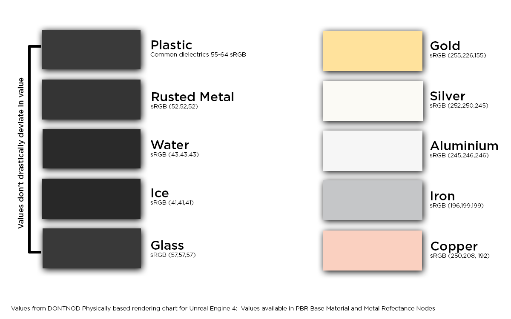
(2) Cook-Torrance BRDF
见 https://learnopengl-cn.github.io/07 PBR/01 Theory/
(3) PBR 的计算和实现
PBR 的光照结果通过反射方程来计算，分为两部分，一个是漫反射部分，一个是镜面反射部分。如下所示是 Cook-Torrance BRDF 反射率方程。
https://learnopengl-cn.github.io/07 PBR/02 Lighting/
https://learnopengl-cn.github.io/07 PBR/03 IBL/01 Diffuse irradiance/
(4) PBR 里面的 D、F、G 项的物理意义？菲涅尔项会带来怎样的视觉效果？
最常用的是 Cook-Torrance 模型，其镜面反射部分表达式为：
其中：
- D(h)：法线分布函数（Normal Distribution Function）
- F(v, h)：菲涅尔项（Fresnel Term）
- G(l, v, h)：几何遮蔽函数（Geometry / Shadowing-Masking）
-
D：法线分布函数（Normal Distribution Function, NDF）
- 物理意义：描述 微表面法线 与 半角向量 对齐的概率分布。 简单说，它表示“多少微面朝向镜面反射方向”。
- 微表面越光滑（低粗糙度），D 趋向于锐峰，产生明亮集中的高光；表面越粗糙，D 趋向于扁平或宽分布，产生宽而暗淡的镜面反射。
- 一般我们用宏观表面的半矢量 h 来表示微观表面法线 m，因为仅 m = h 的表面点的朝向才会将光线 l 反射到视线 v 的方向，其他朝向的表面点对 BRDF 没有贡献（正负相互抵消）。
- 常见模型：
- Beckmann
- GGX（现代 PBR 中默认）
-
F：菲涅尔项（Fresnel Term）
- 物理意义：描述光线与表面夹角变化时，反射率随角度增加而上升的现象。
- Fresnel 效应：入射角越斜 → 反射越强（即越“亮”）
- 常用模型：
- Schlick 近似公式（性能高、接近真实）：
其中， 为视角垂直时的反射率（通常为金属颜色或 0.04），为观察方向与半角向量之间的夹角。
- Schlick 近似公式（性能高、接近真实）：
- 视觉效果：
- 表面斜角处（边缘）看起来更亮、更金属感
- 金属材料更强烈（F 值高）
- 增加真实感和材质变化（如镜头转动时反光变化）
-
G：几何遮蔽项（Geometry Function）
- 物理意义：考虑微面之间的遮蔽和自遮挡，即光线和视线是否都能“看到”这个微面。
- 若表面太粗糙或视角太斜 → 会有更多遮挡
- 限制了高光强度，保持能量守恒
- 常见模型：
- Smith G（广泛使用）
- Schlick-Smith（优化版本，性能好）
- 视觉效果：
作用 表现 控制高光能量 避免高光过亮或能量不守恒 斜角处高光被遮挡 让高光“卷入”，更自然
| 项目 | 控制的方面 | 视觉表现 |
|---|---|---|
| D | 微面法线分布 | 控制高光的形状与大小 |
| F | 光的角度反射比率 | 控制高光在边缘更亮（Fresnel 效应） |
| G | 遮蔽与自遮挡 | 控制高光的能量、强度，更真实 |
(5) PBR 材质贴图很多，纹理槽位不够应该怎么处理？
- 合并多个属性到一个通道，比如 roughness 和 metallic 可以存在 8 bit 纹理的高低 4 bit 上
- 虚拟纹理，将小贴图合并成大贴图，按需调入
5. 光照模型
光照模型是用来模拟光线与物体表面交互的模型，目的是根据各种因素（如光源、材质属性、表面方向和观察者位置）计算每个像素或表面的颜色和亮度。
(1) 光照模型有哪些
-
局部光照模型（简单，仅考虑直接光照，适合实时渲染）
-
漫反射光 (Diffuse lighting)：模拟粗糙表面的漫反射。反射光强与入射光和表面法线间的夹角有关系
- Lambertian Reflection Model：一种理想的漫反射光照模型，光源射到表面后均匀地朝四面八方反射相同强度的光（）
-
镜面反射光（Specular lighting）：模拟光滑表面的高光。看到的反射光强度与观察视角（观察方向和反射光方向的夹角）有关。
-
Phong Model：结合了环境光、漫反射光和镜面反射光。
其中：
- ，其中 R 是 reflected light vector，V 是 view vector，n 是 shininess factor。
-
Blinn-Phong Model：Phong Model 的改进版，引入半程向量（halfway vector）。
-
-
Cook-Torrance Model：Cook-Torrance 模型是一个基于物理的反射（pbr）模型，它模拟光线如何在微表面层面上从粗糙表面反射。然而 Cook-Torrance model 只考虑直接光照（从光源到表面），而不考虑光线在表面之间弹射（这正是全局光照模型所做的）。
-
-
全局光照模型（复杂，既考虑直接光照也考虑间接光照，考虑光从表面多次折射/反射，适合离线渲染）
- Ray Tracing：从摄像机逆向发出光线，多次反射折射达到光源的路径。
- Path Tracing：一种光线追踪的进阶版本，能够模拟柔和阴影、焦散和色彩溢出。非常精确但速度慢。
- 辐射度（Radioisty）：模拟表面之间光的漫反射。常用于建筑可视化。
- 光子映射 (Photon Mapping)：Two-pass
- 第一步：光子发射与存储
- 从光源发射光子。
- 追踪光子在场景中弹射的路径。每次光子击中表面时，把光子的位置、入射方向、能量（通量）存储在光子图中（本质上是一种 KD 树）。
- 通常有两种类型的光子图：焦散光子图 用于锐利的聚焦光图案；全局光子图 用于间接漫反射照明。
- 第二步：渲染（辐射率估计）
- 对于每个可见的表面点（由光线追踪或光栅化确定），收集一定半径范围内的附近光子。通过对附近光子的能量求和来估计辐射率（radiance）。
- 与来自局部光照模型的直接光照结合。
- 第一步：光子发射与存储
(2) Phong 光照模型和 Blinn-Phong 光照模型的区别
具体见 https://learnopengl-cn.github.io/05 Advanced Lighting/01 Advanced Lighting/。
Phone Model 是一个经验模型。Blinn-Phong Model 是 phong 模型的改进版。Phong 模型在处理高光的时候会有光照不连续的问题（尤其是物体反光度 shininess 很低时）。这是因为 phong 模型在计算镜面反射光的时候要计算观察方向和反射光方向夹角的余弦并取其与 0 之间的最大值，这也就是说当两个方向夹角大于九十度时，镜面反射光线的分量就被消除了。Blinn-Phong 模型引入了半程向量解决了这一问题。所谓半程向量，指的是入射光方向和观察方向的角平分线方向向量。在 Blinn-Phong 模型中，计算半程向量和表面法线的点乘，不论从哪个角度看这二者之间的夹角一定是小于九十度的（除非光源在表面之下），当视线正好与反射光线的方向对齐时，半程向量就会与法线完美契合。所以当观察者视线越接近于原本反射光线的方向时，镜面高光就会越强。它产生的效果会与 phong 光照有些许不同，但是大部分情况下看起来会更自然一点，特别是低高光的区域。
6. 全局光照
全局光照既考虑既考虑场景中来自光源的直接光照，又考虑经过场景中其他物体反射后的间接光照的一种渲染技术。即可以理解为：全局光照 = 直接光照(Direct Light) + 间接光照(Indirect Light)。
(1) Ray Tracing and Path Tracing
不细说了，具体见：
GAMES101 Ray Tracing 1
GAMES101 Ray Tracing 2
GAMES101 Ray Tracing 3
Realtime rendering 4th Ray Tracing
(2) 环境光遮蔽（Ambient Occlusion）
见
https://learnopengl-cn.github.io/05 Advanced Lighting/09 SSAO/。
https://www.wolai.com/wt7wKwF46iUv6HAQprDATB (Chapter 11.3.6)
- 原理：通过将褶皱、孔洞和非常靠近的墙面变暗的方法近似模拟出间接光照。这些区域很大程度上是被周围的几何体遮蔽的，光线会很难流失，所以这些地方看起来会更暗一些。
- 屏幕空间算法（screen-space ambient occlusion，SSAO）：
- 基于模型空间的方法，其开销与场景的复杂度成正比。然而，我们完全可以从屏幕空间中已有的数据出发，推导出一些有关遮挡的信息，例如深度和法线。这种基于屏幕空间的算法，具有恒定的开销，其复杂度与与场景的细节程度无关，只与渲染时所使用的画面分辨率有关。在实践中，屏幕空间算法的执行时间，还取决于数据在深度缓冲或者法线缓冲中的分布，因为这种数据分散效应，在进行遮挡计算的时候，会降低 GPU 缓存的命中率，从而延长算法的执行时间。
- 原理：对于铺屏四边形(Screen-filled Quad)上的每一个片段，我们都会根据周边深度值计算一个遮蔽因子(Occlusion Factor)。这个遮蔽因子之后会被用来减少或者抵消片段的环境光照分量。遮蔽因子是通过采集片段周围球型核心(Kernel)的多个深度样本，并和当前片段深度值对比而得到的。高于片段深度值样本的个数就是我们想要的遮蔽因子。某处的遮蔽因子越大，环境光照越小。如下图，黄色圆圈代表片段的位置，这张图相当于一个二维剖面，相机位于片段正上方（视线方向同红色箭头），红色圆圈表示高于片段深度值的样本。环境遮挡因子 k_A 的值是通过测试的样本数与总样本数的加权比值。这些样本的权重会随着到像素距离的增大而减小，即距离像素越远，该样本的权重就越小。

如果样本数量太低，渲染的精度会急剧减少，会得到波纹(Banding)的效果；样本数量太高则会影响性能。可以通过引入随机性到采样核心(Sample Kernel)的采样中从而减少样本的数目。通过随机旋转采样核心，能在有限样本数量中得到高质量的结果。然而随机性引入了一个很明显的噪声图案，需要通过模糊结果来修复这一问题。
SSAO 将球形范围内的所有样本都考虑在内，而不是只考虑表面上半球范围内的样本。这种简化意味着会对表面以下的样本也进行计数。因此，一些教程中不使用球体的采样核心，而使用一个沿着表面法向量的半球体采样核心。通过在法向半球体(Normal-oriented Hemisphere)周围采样，不考虑到片段底部的几何体，从而消除了环境光遮蔽灰蒙蒙的感觉，从而产生更真实的结果。
(3) 预计算辐射率传输(Precomputed Radiance Transfer, PRT)
球谐函数（Spherical Harmonics）？
(4) BDRT, MLT, Photon Mapping, Vertex Connection and Merging (VCM), Instant Radiosity (IR)
见 GAMES101 Advanced light transport。
(5) 实时光线追踪
见 https://www.wolai.com/59v8Mkmo15aMG67ni27AJD。
7. 抗锯齿/反走样（Anti-aliasing）
参考：
GAMES101 Anti-aliasing
Realtime Rendering 4th Chapter 5.4
(1) 锯齿产生原因
当信号或图像包含高频细节但采样不足时，就会出现走样现象（在光栅化游戏中，屏幕的分辨率大体决定了采样率，因此屏幕分辨率越高，走样和锯齿现象就越少）。此时采样信号的频率会比原始信号低，为了对一个信号进行正确的采样（即可以从采样出来的样本中，重建原始信号），采样率必须要在采样信号最大频率的两倍以上。这通常被称作采样定理（sampling theorem），对应的采样率叫做 Nyquist 率或者 Nyquist 极限.
当使用点样本（像素点渲染）对三维场景进行采样的时候，正常情况下是不会有频宽限制的，这是因为三角形的边界，阴影的边界以及其他会产生不连续信号的现象，会导致三维场景中的频率是没有上限的。此外，无论采样样本排列的有多么紧密，场景中的物体都可以被继续缩小，使得它们根本无法被采样。因此，在使用点样本来渲染场景的时候，我们是无法完全避免走样现象的。
(2) 超采样抗锯齿(supersampling antialiasing, SSAA)
- 最朴素/暴力的反走样方法
- 原理（SSAA = Oversampling + Downsampling）：
- 以高于显示分辨率的分辨率渲染图像（映射到高分辨率缓存中放大）；
- 将高分辨率图像降采样（downsample）（对相邻像素样本进行滤波（卷积），一般取临近 2-4 个像素，采样混合后生成最终的像素）回显示分辨率。
- GPU 的带宽，执行次数和内存占用会直接成倍的增长。例如：假设我们现在需要一张分辨率为的图像，我们使用该方法（SSAA 4X）时，首先需要离屏渲染一张分辨率为的图像，然后将屏幕上每像素区域内的颜色值进行平均，然后再显示到屏幕上；对于最终生成的图像而言，每个像素都对应了四个采样点（片元着色器被调用的次数成了原来的 4 倍），并使用一个 box 滤波器进行过滤。而且每个子样本都有一个 z-buffer 深度，它们都需要进行完整的着色和填充。
(3) 多重采样抗锯齿(multisample antialiasing, MSAA)
- 概念：MSAA 和 SSAA 都是基于硬件的实现。MSAA 将单一的采样点变为多个采样点。我们不再使用像素中心的单一采样点，而是使用按照特定图案排列的多个子采样点(Subsample) （采样点的数量可以是任意的，更多的采样点能带来更精确的遮盖率）。这些子采样点是否被三角形覆盖决定了像素的遮盖度。如下图的左侧是正常情况下判定三角形是否遮盖的方式。在例子中的这个像素上不会运行片段着色器，因为它的采样点并未被三角形所覆盖。右侧展示的是实施 MSAA 之后的版本，每个像素包含有 4 个采样点。这里，只有两个采样点被三角形覆盖。无论三角形遮盖了多少个子采样点，（每个图元中）每个像素只运行一次片段着色器（不同于 SSAA）。片段着色器通过插值获得像素中心的坐标，然后 MSAA 使用更大的深度/模板缓冲区来确定覆盖率。被覆盖的子采样点数量将决定了像素颜色对帧缓冲的影响程度。因为下图的 4 个采样点中只有 2 个被遮盖住了，所以三角形的颜色会有一半与帧缓冲区的颜色（在这里是无色）进行混合。
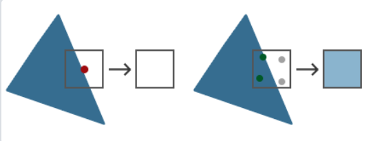
简单来说，一个像素中如果有更多的采样点被三角形遮盖，那么这个像素的颜色就会更接近于三角形的颜色。最终结果如下图。
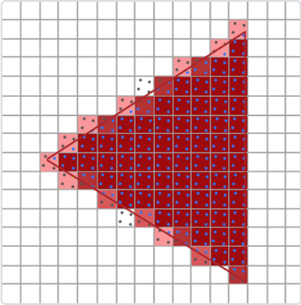
MSAA 判断一个三角形是否被像素覆盖的时候会计算多个样本，但是在片元着色器计算像素颜色的时候每个像素还是只计算一次。 - 为什么是更大的缓冲区？因为要为每个子样本都存储独立的颜色信息和深度信息。这些信息用于判断子采样点是否被三角形覆盖、被哪个三角形覆盖。如下图，中间的图展示了一个像素被两个物体重叠的情况，其中红色物体覆盖了三个样本，蓝色物体覆盖了一个样本。图中的绿色点代表了像素着色器计算的位置，由于红色三角形覆盖了像素的中心，因此这个位置被用于着色器计算；而蓝色物体的像素着色器将在 1 号样本的位置上进行计算。对于 MSAA 而言，所有的四个样本位置都存储了单独的颜色信息和深度信息，右图展示了 EQAA 的 2f4x 模式 (这里的 EQAA 指的是 Enhanced Quality Anti-Aliasing，它是 AMD 提出的 MSAA 改进版，思路是把 颜色信息 和 覆盖率信息 分离存储。在 MSAA 中 每个 采样点 都存有 颜色 & 深度值；而 EQAA 存储得比 MSAA 少，比如这里只有 2 份。2f4x 是一种 EQAA 配置模式，意思是：2 个 color & depth 信息存储 (f = fragment)，4 个覆盖率采样点 (Coverage samples))，四个样本对应了四个 ID 值，这个 ID 值用于在另一个只包含颜色信息和深度信息的表格中进行检索。
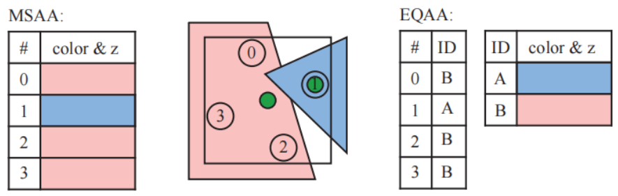 - MSAA 的速度要比纯超采样的方案快，因为每个片元只会进行一次着色计算。
- 现在延迟渲染已经支持 MSAA 了。传统延迟渲染不支持 MSAA（需额外方案）（https://zhuanlan.zhihu.com/p/135444145 ）。MSAA 对延迟渲染的支持不是很好；有几个原因，一个是 MSAA 本质上是一种发生在光栅化阶段的技术，也就是几何阶段后，着色阶段前，这个技术需要用到场景中的几何信息，但是延迟渲染因为需要节省光照计算的原因，事先把所有信息都放在了 GBuffer 上，着色计算的时候已经丢失了几何信息；而且关键一点是如果强行这么做，MSAA 会增加数倍的带宽性能消耗，因此一般都不会这么做。还有一个原因是是以前 DX9 的时代，MRT (多重渲染目标)技术不支持 MSAA。
(4) 快速近似抗锯齿(fast approximate antialiasing, FXAA)
- 概念：基于屏幕空间的抗锯齿算法，它通过对图像进行后处理来平滑锯齿边缘（不依赖硬件）。与 SSAA 和 MSAA 不同，它不需要多重采样，也不改变渲染分辨率，而是直接在最终的帧缓冲上操作。本质上是一个图像过滤器，通过检测边缘并对边缘区域的像素进行模糊处理，来减少锯齿。
- 工作原理：
-
- 边缘检测
FXAA 首先通过分析屏幕空间图像中亮度或颜色的梯度变化，快速检测哪些地方存在锯齿边缘。
- 边缘检测
-
- 边缘平滑
检测到边缘后，FXAA 会对这些区域内的像素进行 模糊处理 或 颜色插值，将颜色值在边缘附近平滑过渡，从而消除锯齿。处理时会计算像素周围的相邻像素颜色通过 加权平均 或 线性插值 进行平滑
- 边缘平滑
-
- 速度极快，适用于实时渲染
- 只在 2D 图像 上处理，不能消除 几何/遮挡锯齿
(5) 时域抗锯齿(temporal antialiasing, TAA)
- 利用时间上的帧间信息来减少锯齿和抖动。
- 效果好，能消除几乎所有锯齿，包括透明物体
- 会产生 Ghosting / 拖影（运动物体边缘有残影）
- 成本低，比 SSAA 和 MSAA 性能消耗小
- 对 快速移动场景 效果不佳，需要运动矢量精确
- 流程：
- 历史帧对齐 (Reprojection)：利用 运动矢量（Motion Vectors） 将 前一帧的像素 对齐到当前帧。这样可以准确对应历史帧的像素位置，避免图像拖影或错误混合；
- 采样偏移 (Jittering)：在每一帧中，微小地扰动相机采样位置（通常是 sub-pixel 级别）。这样，渲染出的每一帧像素信息会有所不同，类似于时间上的 Supersampling；
- 历史帧混合 (Temporal Filtering)：将 当前帧像素 与 历史帧对齐后的像素 进行加权平均。平滑掉锯齿，同时减少图像闪烁和噪声。
1 | |
(6) 深度学习超采样(Deep Learning Super Sampling, DLSS)
在较低分辨率下渲染图像，并利用 AI 网络将其重建为高分辨率图像，同时保留细节和边缘清晰度，提升帧率且保证画质。
(7) 亚像素形态学抗锯齿（subpixel morphological antialiasing ，SMAA）
SMAA 是一种 屏幕空间后处理抗锯齿技术，它属于 形态学抗锯齿（Morphological Anti-Aliasing, MLAA） 的改进版，结合了 FXAA 的速度优势 和 MLAA 的抗锯齿质量，并加入了 亚像素检测 和 时间域信息（在高级模式下）。
8. 阴影技术
参考：
https://learnopengl-cn.github.io/05 Advanced Lighting/03 Shadows/01 Shadow Mapping/
RTR 4th Chapter 7
GAMES202 Shadow
(1) Shadow Mapping
-
原理（two-pass）：
- 从光源视角渲染场景，生成一个只保存每个像素的深度值的深度贴图 (Shadow Map)
- 在正常渲染时，将每个像素投影到光源空间（先把坐标变换到世界空间通过矩阵变换到光源裁剪空间再采样 shadow map），比较它与 Shadow Map 中的深度值，如果当前片元在光源空间的 深度 ，则说明它被其他物体挡住，即在阴影中；否则（如二者相等）没有被遮挡，即不在阴影中。注意这里。根据结果 调整光照强度（通常是设为黑色或降低亮度）。
- 在 理论上 会觉得两次 Pass 的 z 应该是一样的，因为：同一个物体、同一个世界坐标、同一个 LightView 和 LightProj 矩阵。确实，对于同一物体的可见面，在 Shadow Pass 和 Lighting Pass 中拿到的光源空间深度值是相等的。但关键在于在 Lighting Pass 时，不只对 投影者（产生阴影的物体）计算阴影，而是对 所有片元 做阴影检测。Shadow Map 的真正用途是记录最靠近光源的深度（d_shadow）。在 Lighting Pass，对于当前片元，它的世界位置可能 被其他物体遮挡比较它的 d_current 和 Shadow Map 中相同位置的 d_shadow. 如果 当前片元在光源视角下的深度 > Shadow Map 中的深度则说明它被遮挡，在阴影中。
- 并不是场景中的所有物体都需要被渲染到光源的视野中。首先，只有能够投射阴影的物体才需要进行渲染，我们将其称为 shadow caster（遮挡物，能够投射出阴影的物体）。例如：如果我们事先知道了地面只能够接收阴影，但是无法投射阴影，那么它就不需要被渲染到阴影贴图中。
- pass1 通过光栅化生成 shadow map，pass2 在 fragment shader 中使用 shadow map。
- image-space algorithm
-
优点：
- 简单、高效
- 支持所有类型的几何体
- 不需要场景几何的信息
-
缺点：
- 受限于 shadow map 的分辨率 (在距离光源比较远的情况下，多个片段可能从深度贴图的同一个值中去采样) 以及 z-buffer 的数值精度
- 因此该算法容易受到锯齿问题的影响，尤其是在物体之间的接触点附近。一个常见的问题是自阴影锯齿（self-shadow aliasing），即一个三角形错误地对自身投射阴影，这个现象通常会被称为表面痤疮（surface acne）或者阴影痤疮（shadow acne）。产生这个问题主要有两个原因：其中一个原因是处理器精度的数值限制；另一个原因是几何上的，由于受到阴影贴图分辨率的限制，因此一个点状样本的值会被用来代表一个小范围区域的深度。也就是说，为光源生成的样本，几乎永远不会与屏幕样本位于相同的位置（例如：像素通常会在屏幕样本的中心进行采样）。当光源的存储深度值与观察表面的深度值进行比较时，光源的值可能会略低于表面的值，从而导致自阴影现象的发生。一种帮助避免（但并不总是能消除）各种阴影贴图瑕疵的常见方法是引入偏移量因子。
- 过大的偏移量可能导致 所谓的**漏光（light leak）或者 Peter Panning **问题，即物体看起来像是悬浮在表面上方一样。这种瑕疵的出现，是因为物体接触点下方的区域（例如脚下的地面），被向前偏移得太多，因此并没有接收到阴影。
PS: Lighting pass 中使用什么投影？
所使用的投影类型取决于光源的类型：
-
对于方向光 (Directional Light，例如模拟太阳光):
- 使用正交投影 (Orthographic Projection)。
- 为什么？ 方向光被认为是无限远的光源，其光线是相互平行的。正交投影的特性是它能够保持物体的相对大小和形状，并且其视景体 (view frustum) 是一个长方体，投影线也是相互平行的。这与方向光平行光线的物理特性完美匹配。使用正交投影可以确保从光源视角看到的场景深度能够准确地反映平行光线照射下的遮挡关系。这个正交投影的视景体需要足够大，以覆盖主摄像机视景体中可能投射或接收阴影的区域。
-
对于点光源 (Point Light) 或聚光灯 (Spotlight):
- 使用透视投影 (Perspective Projection)。
- 为什么？ 点光源和聚光灯都有一个明确的位置，光线从这个点向外辐射（聚光灯则是在一个锥形范围内辐射）。透视投影的特性是“近大远小”，视景体是一个棱锥台（或圆锥台，在实际渲染中通常用棱锥台近似），投影线会汇聚到视点。这与点光源/聚光灯光线从一个点发散的物理特性一致。使用透视投影可以正确地捕捉到物体离光源越近，其在深度图上占据的区域越大，以及阴影随距离发散的效果。
- 对于点光源，因为它向所有方向发光，通常需要渲染六个方向的透视投影到立方体贴图 (Cube Map) 的各个面上，每个面都相当于一个独立的 shadow map。
- 对于聚光灯，其视域本身就是一个锥形，所以单个透视投影非常适合。
-
总结：
选择投影类型的根本目的是尽可能准确地模拟从光源“看”出去的场景，以便记录哪些表面离光源最近。
- 方向光的光线是平行的，没有单一的“视点”，因此正交投影是合适的模型。
- 点光源/聚光灯的光线是从一个点发散的，有明确的“视点”，因此透视投影是合适的模型。
这个第一个 pass 的输出（深度图）记录了从光源视角到场景中最近表面的距离。在后续的渲染 pass 中，当渲染主摄像机视角的场景时，每个片元的位置会被转换到光源的裁剪空间，并将其深度与 shadow map 中对应位置的深度进行比较，从而判断该片元是否处于阴影之中。
(2) 百分比接近滤波（Percentage-Closer Filtering，PCF）
对阴影贴图技术进行简单的扩展，改善阴影贴图的分辨率问题，就可以获得质量不错的伪软阴影效果。
-
PCF 是通过在 Shadow Map 中对周围多个采样点的深度测试结果进行平均，来实现阴影边缘平滑过渡的抗锯齿技术(仍然是硬阴影，边界只是模糊)。
-
在传统的 Shadow Mapping 中：片元的阴影检测是单点采样 → 0(在阴影中) 或 1(不在阴影中)，阴影边缘会出现明显的锯齿。
-
核心思想：在当前片元的 Shadow Map 坐标附近，进行多次深度比较采样，然后对结果进行平均。
-
步骤：
- 在 Shadow Map 中 以当前片元坐标为中心，取一个 采样区域
- 对每个采样点，比较当前片元（当前采样点）的 d_current 与 Shadow Map 中存储的 d_shadow
- 将所有采样结果 取平均值
-
即假设有 N 个采样点，每个采样点的阴影检测结果为：
PCF 采样点的阴影检测公式：PCF 阴影值：
-
现实世界中，面光源可以产生柔和的软阴影效果，到达表面上某个位置的光线数量，与该位置所能看见的光源面积大小成比例。而 PCF 算法试图通过反转这个过程，来对一个精确光源或者方向光的软阴影进行近似。PCF 并没有从一个表面位置上来计算光源可见区域的面积，而是从靠近该位置的一组表面位置上，来计算精确光源的可见性。PCF 的名称"percentage-closer filtering"就表明了算法的最终目标，即找到光源可见样本所占的百分比，使用这个百分比来近似照射到表面位置的光线数量。如下图所示，左图中，来自面光源的棕色线代表了半影的范围。对于阴影接收物上的点，可以对面光源表面进行采样，并通过计算哪些采样点没有被遮挡物遮挡，从而获得该点所接收到的光线数量。右图中的点光源并不会产生半影现象。PCF 通过反转左图中过程，来对面光源效果进行近似：在给定的位置上，对阴影贴图附近的可比较区域进行采样，从而计算有多少样本会被照亮（百分比）。图中红色椭圆代表了在阴影贴图上进行采样的区域，在理想情况下，这个圆形区域的半径，与接收物和遮挡物之间的距离成正比。
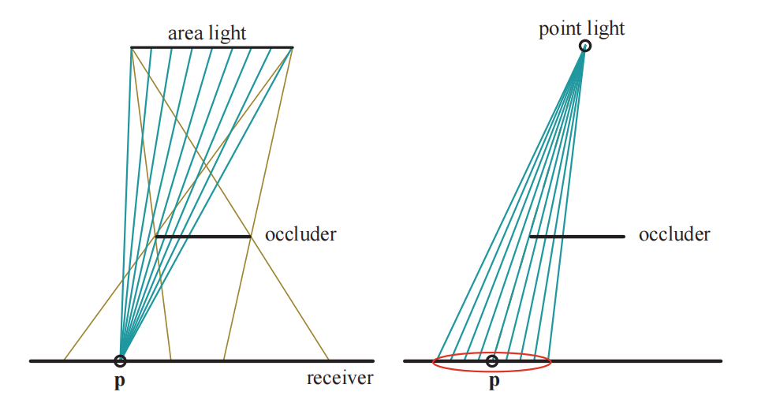
(3) 级联阴影贴图 (Cascade Shadow Map, CSM)
目前实时渲染中最常用的硬阴影技术之一，特别是在 开放世界游戏 和 大场景渲染 中。
- 在传统 Shadow Mapping 中，Shadow Map 是从光源视角渲染的一张全局深度贴图。在大场景下，近处物体阴影锯齿严重，远处阴影分辨率浪费，原因是 Shadow Map 分辨率固定，越远区域分布得越稀疏，近处阴影细节丢失。
- 将摄像机视锥体 (View Frustum) 沿深度方向划分为多个区间 (Cascade)，每个区间生成一张单独的 Shadow Map。近处区间 分配更高 Shadow Map 分辨率；远处区间分辨率可以降低。
- 步骤：
- a. 视锥体划分 (Frustum Split)
- 常见的划分方式：
Uniform Split: 等距离划分
Log Split: 近处细，远处疏
Practical Split: Uniform + Log 混合（效果最好）
- 常见的划分方式：
- b. 为每个 Cascade 生成 Shadow Map。在 每个子视锥体 对应的 光源视角 下，渲染 Shadow Map
- c. 渲染阶段选择对应 Shadow Map。即在 Lighting Pass 时，判断当前片元位于哪个 Cascade 区间，从而选择对应的 Shadow Map 做阴影检测。
- a. 视锥体划分 (Frustum Split)
- CSM 本质是硬阴影技术，通常搭配 PCF 或 PCSS 等软化技术使用，实际效果可以是 软阴影
(4) 软阴影
Shadow mapping 可以生成硬阴影，但真实世界的阴影有模糊过渡边缘（软阴影，Soft Shadow）
百分比渐进软阴影 (Percentage Closer Soft Shadow, PCSS)
- PCSS 是一种基于 Shadow Map 的软阴影技术，用于模拟真实世界的软阴影效果 —— 阴影边缘根据遮挡物与接收面之间的距离变得模糊或锐利。
- 通过对阴影贴图上的附近区域进行搜索，来找到所有可能的遮挡物，并使用这些遮挡物与表面位置的平均距离，来决定采样区域的宽度。通过动态调整滤波半径来模拟物理上真实的半影扩散效果。
- 步骤：
- a. Blocker Search (遮挡物搜索)：在 Shadow Map 中，以当前片元的 Shadow Map 坐标为中心，在一个小范围内进行采样，找出被 blocker 遮挡的采样点（这里通过深度比较来判断哪些是"被遮挡的采样点"，即当时，当前片元比 Shadow Map 中的 blocker 更近，即未被遮挡，反之被遮挡），统计平均 blocker 深度 z_avg；
- b. Penumbra Size Estimation (半影区域估算)：根据 当前片元与 blocker 平均深度的距离，动态估算半影大小 (filter radius)。公式通常类似：。这里 k 是一个调节参数。通过公式看出，接收面 (Receiver) 到遮挡物 (Blocker) 之间的距离越远，半影越宽，阴影越模糊；
- c. PCF Filtering (模糊采样)：在估算好的 Filter Radius 范围内，执行 PCF。即：在阴影区域内大量采样，对阴影测试结果进行平均，实现边缘模糊效果。
- 总结：Lighting Pass 每个片元：
- Blocker Search (查找遮挡物深度) 得到 平均 blocker 深度
- 基于平均 blocker 深度 和 类似相似三角形的式子估算半影大小 (Filter Radius)
- 在估算得到的 Filter Radius 对应的区域内做 PCF
- 得到最终软阴影效果
- 支持实时渲染，计算量大（solution：稀疏采样）
方差阴影贴图 (Variance Shadow Mapping, VSM)
在 Shadow Map 中存储均值与方差，近似软阴影。
- 步骤：
- a. 存储 Shadow Map
- 对于每个采样点：
更具体地，在生成 Shadow Map (第一 Pass) 时，对于每个 Shadow Map 纹理坐标 (u, v)，不是简单存 单个 d 值，而是在一个固定小窗口内 (比如 3×3, 5×5)统计：所有采样点深度的平均值 → 存到 m1；所有采样点深度平方的平均值 → 存到 m2。为什么不能只存单个 和 ？因为如果你只存单个采样点的 和 ，方差（）永远是 0。
- 对于每个采样点：
- b. 计算方差
- c. Chebyshev 不等式估算可见性
根据 切比雪夫不等式 (Chebyshev’s Inequality)：这个上界用作 阴影值，代表当前片元被遮挡的概率。
- a. 存储 Shadow Map
- 存在 light leaking
Ray Tracing Based Soft Shadow
最真实，基于光线追踪，计算阴影笔 umbra 和半影 penumbra 区域，开销大。
- 采样光源：对于每个片元，从该片元位置发射多条 Shadow Rays (阴影光线)方向为从片元到光源面积内的多个采样点。
- 遮挡检测：每条 Shadow Ray，如果与遮挡物相交，即被遮挡；如果直达光源即不被遮挡。
- 统计可见率：统计所有 Shadow Rays 的 遮挡比例。这个比例直接用作 当前像素的阴影值，形成平滑的软阴影边缘。
- 具体效果：靠近遮挡物的区域半影区小，阴影边界锐利；远离遮挡物的区域半影区大，阴影边界模糊。
9. 延迟渲染 (Deferred Rendering)
(1) 延迟渲染概念/流程
- 概念：核心思路是先把场景几何信息存到缓冲区 (G-Buffer)，再在单独的 Pass 中进行光照计算。它主要为了解决传统正向渲染（Forward Rendering）在多光源场景下性能下降的问题。
- 流程
- a. Geometry Pass：首先将场景渲染一次，获取到的待渲染对象的各种几何信息存储到名为 G-buffer 的缓冲区中
G-Buffer 通常存储：- 位置 (Position)
- 法线 (Normal)
- 材质参数 (Albedo, Specular, Roughness 等)
- 深度 (Depth)
这一步不做光照计算，但进行深度测试，只保留可见像素
- b. Lighting Pass：
- 使用 G-Buffer 中的数据
- 遍历场景中所有光源
- 逐像素计算光照并写入最终帧缓冲
- a. Geometry Pass：首先将场景渲染一次，获取到的待渲染对象的各种几何信息存储到名为 G-buffer 的缓冲区中
PS: MRT (Multiple Render Targets)
现代 GPU 原生支持 (OpenGL, DirectX, Vulkan 等)
- 传统渲染：
- 一个 Fragment Shader → 只能写入 一个颜色缓冲区 (Color Attachment)
- MRT 渲染：
- 一个 Fragment Shader → 可以同时写入 多个颜色缓冲区
比如：
Color Attachment 0 → 位置
Color Attachment 1 → 法线
Color Attachment 2 → Albedo (漫反射颜色)
Color Attachment 3 → Material 参数（Roughness, Metallic, Specular 等）
这样 一次几何 Pass 就能同时写入所有 G-Buffer 信息，从而为后面的 Lighting Pass 提供数据。
- 一个 Fragment Shader → 可以同时写入 多个颜色缓冲区
(2) 延迟渲染和正向渲染的区别，优缺点？
- 延迟渲染
- 优点：
- 高效处理大量光源：光照计算与几何渲染分离，避免每个像素多次进行光照计算，性能较好。
- 减少过度绘制：只对可见像素进行光照计算。
- 缺点：
- 内存和带宽消耗高：需要额外的 G-Buffer 存储几何信息，显存占用较大。带宽(bandwidth)指的是 GPU 在每秒钟内从显存 (VRAM) 读写数据的能力，通常以 GB/s 为单位。带宽高原因是写入阶段每个像素要写多个 Buffer，读取阶段每个像素需要读取多个 Buffer。
- 材质复杂度受限（G-Buffer 容量有限）
- 不支持透明物体：G-Buffer 无法正确处理透明物体的多层叠加效果。透明物体的正确渲染需要：排序（从远到近）；逐片元混合 (Blending) ，即需要知道多个重叠片元的信息。而延迟渲染 G-Buffer，每个像素只存最近的一个片元；后面的透明片元信息会被深度测试丢弃。解决办法是把渲染器分为两个部分：一个是延迟渲染的部分，另一个是专门为了混合或者其他不适合延迟渲染管线的着色器效果而设计的的正向渲染的部分。即透明物体单独使用正向渲染 (Forward Rendering) Pass，也叫 Hybrid Rendering Pipeline (混合渲染管线)。
- 迫使对大部分场景的光照使用相同的光照算法：你可以通过包含更多关于材质的数据到 G-Buffer 中来减轻这一缺点。
- 抗锯齿问题：传统延迟渲染与 MSAA 不兼容，抗锯齿处理复杂。
- 优点：
- 正向渲染
- 优点：
- 内存占用低：无需额外的 G-Buffer，内存消耗较低。
- 支持透明物体：可以很好地处理透明物体的渲染。
- 抗锯齿效果好：支持 MSAA，抗锯齿处理简单。
- 缺点：
- 性能问题：在处理大量光源时，每个像素的光照计算会变得非常耗时。
- 灵活性较差：修改光照模型需要重新渲染几何信息。
- 优点：
(3) 如何改进正向渲染？
-
a. Forward+（Forward Plus）
- 把屏幕分成小块（Tile），每个 Tile 预计算出有哪些光源会影响它，然后片元阶段只处理这些光
- 实现步骤：
- 使用 Compute Shader（compute shader 不参与图形渲染流水线（不输出像素），而是用于在 GPU 上执行任意并行计算任务）扫描所有光源，根据光源影响范围（球体包围）将它们分配到屏幕 Tile
- 把光源 ID 存到一个 光源列表缓冲区（light index list）
- 在每个片元 Shader 中读取当前 Tile 的光源列表，只遍历这些光源
- 优点：
- 可以处理上百个动态光源（比传统 Forward 更快）
- 保持前向渲染支持透明、MSAA 的优势
- 启用光照剪裁，避免浪费计算
-
b. Clustered Forward Rendering
- 进一步将空间划分成 3D 格子（Screen Tile × Depth Slice）
- 实现步骤：
- 像 Forward+ 一样划分 Tile
- 加入 Z 轴（视锥深度），构成立体格子（Cluster）
- 把每个光源分配到对应的 Cluster 列表中
- 片元 Shader 中定位所在 Cluster，读取它的光源
- 优点：
- 精度更高（近处 Tile 更小，光源分配更精准）
- 支持大量光源（常用于 VR、AR、移动端）
- 很适合方向光、点光、聚光等混合情况
-
常见引擎使用的方法
游戏 / 引擎 渲染方式 特性说明 Unity URP（高端） Forward+ 基于 Tile 的光源聚合 Unreal Engine (Mobile) Forward+ 支持透明 + 多光源优化 Doom Eternal Clustered Forward 超高性能 + 大量动态光源 Godot 4.x Clustered Forward 基于 Vulkan，轻量灵活 -
常见方法对比
改进方式 是否重写渲染管线 光源支持能力 实现难度 适合平台 Forward 否 少量光源 简单 普通场景、低端设备 Forward+ 否 中等光源 中 中高端 PC / 移动 Clustered Fwd 是（3D Tile） 大量光源 中高 VR、大型室内场景
10. 纹理贴图
将一张二维图像，按照一定的映射关系，将每个像素贴合到物体表面的对应位置。
(1) 纹理环绕和纹理过滤(采样)
-
环绕方式：纹理坐标的范围通常是从(0, 0)到(1, 1)，设置纹理坐标采样超出范围时，采取什么行为
- GL_REPEAT 对纹理的默认行为。重复纹理图像。
- GL_MIRRORED_REPEAT 和 GL_REPEAT 一样，但每次重复图片是镜像放置的。
- GL_CLAMP_TO_EDGE 纹理坐标会被约束在 0 到 1 之间，超出的部分会重复纹理坐标的边缘，产生一种边缘被拉伸的效果。
- GL_CLAMP_TO_BORDER 超出的坐标为用户指定的边缘颜色。
-
过滤方式：纹理坐标不依赖于分辨率(Resolution)，它可以是任意浮点值，所以 OpenGL 需要知道怎样将纹理像素(Texel)映射到纹理坐标。当物体很大但是纹理的分辨率很低的时候这很重要。
- GL_NEAREST（也叫邻近过滤，Nearest Neighbor Filtering）是 OpenGL 默认的纹理过滤方式。当设置为 GL_NEAREST 的时候，OpenGL 会选择中心点最接近纹理坐标的那个像素。
- GL_LINEAR（也叫线性过滤，(Bi)linear Filtering）它会基于纹理坐标附近的纹理像素，计算出一个插值，近似出这些纹理像素之间的颜色。一个纹理像素的中心距离纹理坐标越近，那么这个纹理像素的颜色对最终的样本颜色的贡献越大。
- GL_NEAREST 产生了颗粒状的图案，我们能够清晰看到组成纹理的像素，而 GL_LINEAR 能够产生更平滑的图案，很难看出单个的纹理像素。
(2) mipmap（多级渐远纹理）的概念，如何实现
问题： 当物体 距离相机较远 或 在屏幕上只占很小的区域时：
- 一个屏幕像素对应纹理中的多个 texel
- 直接采样高分辨率纹理，会出现严重的 Moiré Pattern（摩尔纹）和 Aliasing（锯齿/闪烁）
引入 mipmap 解决远距离物体纹理采样时的 aliasing 和采样效率问题，即生成一系列的纹理图像，后一个纹理图像是前一个的二分之一。距观察者的距离超过一定的阈值，使用不同的多级渐远纹理进行采样，即最适合物体的距离的那个。由于距离远，分辨率不高也不会被用户注意到。同时，多级渐远纹理另一加分之处是它的性能非常好。
(3) 法线贴图(及其他各种贴图)的作用
| 贴图方式 | 思想概述 | 提出年代 |
|---|---|---|
| Bump Mapping (凹凸贴图) | 计算 vertex 的光照时，不是真的使用该 vertex 的法向法向量，而是在原法向法向量上加上一个切分扰动变化的量，达到视觉效果。No self-occlusion, No self-shadow, No silhouette. | 1978 |
| Displacement Mapping (移位贴图) | 直接作用于 vertex，根据 displacement map 中的数值改变 vertex 的位置，真实改变几何形状，产生真实阴影和轮廓。 | 1984 |
| Normal Mapping (法线贴图) | normal map 贴图法线信息，存储在 RGB 通道。计算光照时，替代原 vertex 法线。No self-occlusion, No self-shadow, No silhouette. | 1996 |
| Parallax Mapping (Virtual Displacement Mapping) (视差贴图) | 没有修改 vertex 的位置，贴图时根据 height map 计算纹理坐标的 offset，增强视差效果。No self-occlusion, No self-shadow, No silhouette. | 2001 |
| Relief Mapping (Steep Parallax Mapping) (浮雕贴图) | 在 Parallax Mapping 基础上进一步改进，增加了遮挡、阴影、轮廓线等效果。支持 self-occlusion, self-shadowing, view-motion parallax, and silhouettes. | 2005 |
(4) 虚拟纹理
- 按需加载和分块管理纹理，这样可以使用超高分辨率的大纹理而不会爆显存。
- 只在 GPU 上加载当前帧可见区域的纹理块（tile），不可见的部分不加载。
11. 空间加速结构/算法
参考：
GAMES101 Lecture 13-14
RTR Chapter 19
(1) 包围体 Bounding Volume
- 用比所包含的物体更加简单的几何形状来进行相交测试，比使用内部物体本身快得多。
- 球体、轴对齐包围盒（axis-aligned bounding box，AABB）(使用 AABB 可以在计算射线的 t 参数时避免点乘法向量，具体见 GAMES101 Lecture 13-14)、定向包围盒（oriented bounding box，OBB）和 k-DOP 等
- 三维实时渲染中用于视锥体剔除
(2) 均匀空间划分 - 格子 Grids
- 在包围盒中建立小格子并把与格子重叠的物体记录在对应的格子里
- 按照光线前进的方式遍历格子，如果格子中不包含物体则可以避免求交，进一步提高效率
- 格子数量可以通过 常数乘以物体数 来确定
- 当有大量大小相近的物体均匀分布在场景中时，格子可以有效提升效率（其他不行）
(3) KD Tree
- 二叉空间划分树（binary space partitioning tree），简称 BSP 树，有着两种明显不同的形式：轴对齐（axis-aligned）和多边形对齐（polygon-aligned）。通过使用一个平面来将空间划分成两部分，然后将场景中的几何物体分类到这两个空间中，从而递归完成 BSP 树的创建。一个值得注意的特性是，如果以某种方式来遍历一个 BSP 树，那么从任何角度来看，树的几何内容都可以从前到后进行排序。对于轴对齐的 BSP 树，这种排序是近似的；而对于多边形对齐的 BSP 树，这种排序则是精确的。
- KD 树是轴对齐的 BSP 树。首先，整个场景被包围在一个轴对齐包围盒（axis-aligned bounding box, AABB）中。然后将这个包围盒递归细分为更小的包围盒。现在，假设我们有一个任意递归级别的包围盒，选择这个包围盒的一个轴并生成一个垂直平面，使用这个平面来将包围盒空间划分为两个子包围盒。这个划分平面可以是固定的也可以变化。如下图，内部节点不存储物体，叶子节点存储物体列表。
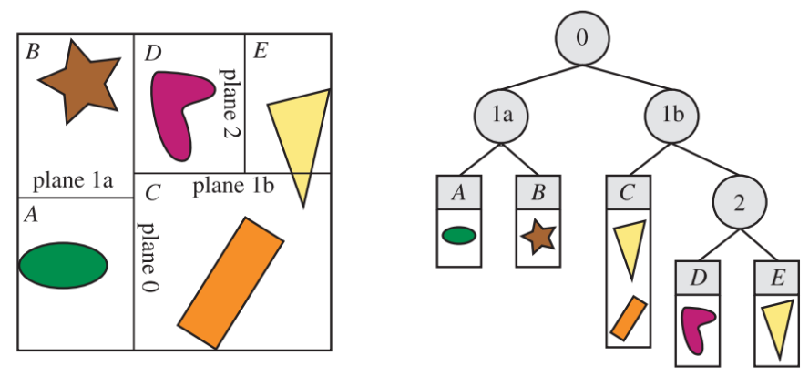 - 在一个包围盒中，可能会有一些物体与划分平面相交，对于这些物体有多种处理方法，例如：这些物体可以被存储在树的这一层中，或者是作为两个子包围盒的成员（冗余），再或者是被这个平面分割成两个单独的物体。以树结构进行存储的好处在于，树中只有物体的一个副本，想要删除一个物体是很简单的。
- 实际中常常利用 KD Tree 提供的粗略的前后排序。对于遮挡剔除算法，以及通过最小化像素过度绘制来降低像素着色器的成本而言，都十分有用。假设遍历一个名为 N 的节点，此时 N 是遍历开始时的根结点。我们会检查节点 N 的划分平面，并在观察者所在平面的一侧来继续对树进行递归遍历。因此，只有当这一半的树结构被遍历完时，我们才会开始遍历树的另一半。但是由于叶子节点中的内容并没有进行排序，而且一个物体可能会位于树的许多节点中，因此这种遍历方式并不会给出精确的前后顺序。然而它能够给出一个粗略的从前到后（front-to-back）排序，这通常来说会很有用。与观察者的位置相比较，通过在节点平面的另一侧开始遍历，可以获得大致的从后向前（back-to-front）排序，这对于透明排序而言十分有用。也可以用来测试光线与场景几何的相交情况，将观察者的位置直接转换为光线的原点即可。
(4) 八叉树 Oct-Tree
- 类似于轴对齐的 BSP 树。一个 box 会同时沿着三个轴进行分割，并且分割点必须位于 box 的中心。这将会创建 8 个新的 box，因此被称为八叉树。这会使得结构更加规则化，从而让一些查询变得更加高效。
- 八叉树是通过将整个场景包围在一个最小的 AABB 中来进行构建的。剩下的过程本质上是递归的，会在满足终止条件时结束。与轴对齐的 BSP 树一样，这些终止条件可以包括达到最大递归深度、或者在一个 box 中获得一定数量的图元。如果满足了某个条件，算法会将这些图元绑定到这个 box 上，并终止递归过程。否则，将会沿着这个 box 的主轴，使用三个平面来对这个 box 进行进一步地细分，从而形成 8 个相同大小的 box。
- 四叉树是八叉树的二维等效形式
(4) 层次包围体 Bounding Volume Hierarchy, BVH
- KD Tree 存在的问题：
- 给定一个 bbox，很难检查一个三角形是否与该 bbox 相交。
- 如果一个对象与多个单元格重叠，则会在多个叶节点中冗余存储对象。
- 为解决上述问题，使用 BVH
- 构建 BVH
- 查找 BBOX
- 递归地将对象集合分割成两个子集
- 重新计算子集的边界框
- 在必要时停止
- 将对象存储在每个叶节点中
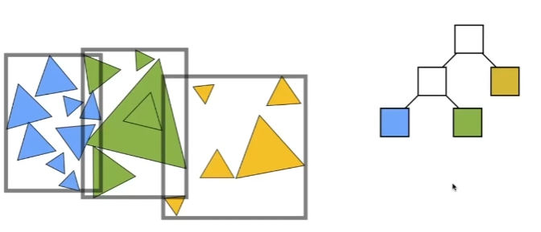
- 如何细分一个节点？
- 选择一个维度进行分割
- 启发式方法#1：始终选择节点中最长的轴
- 启发式方法#2：在对象的中位数位置分割节点（给定 n 个元素，我们可以用快速选择算法在 O(n)时间内找到第 i 个最大的元素(快速选择算法)）
- 终止标准是什么？
- 启发式方法：当节点包含元素少至某个量时停止
- 优点
- KD Tree 属于 spatial partition，BVH 属于 object partition
- 它确保每个 object 只会存储在一个 bbox 中。
- **边界框是基于 object 计算的，因此 object 完全包含在边界框内。**也就是说，无需担心计算 object 和 bbox 之间的交集。
- KD 树是静态结构，这意味着对于动态场景，重建或更新它们在计算上是昂贵的。在现代光线追踪应用中，例如游戏中的实时渲染，动态或动画场景很常见。BVH 之类的替代方案更灵活和高效，因为它们允许增量更新和重新拟合，而无需重建整个结构。
- KD 树处理相干光线（例如光线追踪中由主光线或阴影光线生成的光线）的效率不如 BVH。这是因为 KD 树刚性地细分空间，这可能导致相干光线需要更多遍历步骤。BVH 凭借其边界体积，可以封装大片空间区域，从而使相干光线能够更有效地跳过不必要区域的遍历。
12. 蒙特卡洛积分
具体见：
GAMES101 Lecture 16
-
蒙特卡洛积分 (Monte Carlo Integration)是一种基于随机采样的数值积分方法
-
原理：将积分问题转化为在积分区域内随机采样并取平均的问题。
-
反射方程和渲染方程利用蒙特卡洛积分求解。这里以反射方程为例：
这是一个高维积分，直接积分复杂、难以解析，采用蒙特卡洛积分 + 随机光线采样 近似估算像素亮度。
-
默认情况下，每次采样都是完全（伪）随机。对 低差异序列 （Hammersley 序列：把十进制数字的二进制表示镜像翻转到小数点右边而得）进行蒙特卡洛积分，该序列生成的仍然是随机样本，但样本分布更均匀。当使用低差异序列生成蒙特卡洛样本向量时，该过程称为拟蒙特卡洛积分。拟蒙特卡洛方法具有更快的收敛速度，这使得它对于性能繁重的应用很有用。
-
不用蒙特卡洛怎么表示积分？
13. 重要性采样
- 原理：一种减少蒙特卡洛积分方差的随机采样策略。重要性采样即通过现有的一些已知条件（分布函数），想办法集中于被积函数分布可能性较高的区域(重要的区域)进行采样，进而可高效地计算准确的估算结果的的一种策略。
普通蒙特卡洛积分：
重要性采样版本：
-
理解：因为概率密度函数可能不是均匀分布的，有些地方出现的概率高，有的地方概率低，因此应该尽可能的多采用概率密度高的区域，把更多的采样点放在贡献大的地方，减少浪费在不重要区域的随机采样；否则如果用均匀采样，最后的结果不准确，也造成了计算的浪费
-
举例：在使用路径追踪（或其他计算方法）的时候，我们会从被观察点 p 点随机生成一条入射光线（方向朝外），如果这个光线是均匀分布的话，很有可能可能许多发射出的光线最后都没有与光源相交，这样就造成了很多计算的浪费并造成噪声。重要性采样是说，着重去采样那些更有可能打到光源上的光线，比如更多地采样光源方向的光线。
- Cosine-Weighted Hemisphere Sampling：对于漫反射材质，重要性采样会根据分布采样，这样更多光线指向 法线附近，因为这些方向贡献最大。
- Specular BRDF Sampling：对于镜面或高光材质，重要性采样会根据 BRDF 的高光分布调整，更多采样在主要反射方向，快速收敛，减少噪声。
- 光源直接采样 (Light Sampling)：为了减少 Direct Lighting Noise，路径追踪中直接从光源表面面积均匀采样点，计算可见性，直接贡献到当前像素亮度（见 GAMES101 Lecture 16）。
- 对光源的重要性采样和基于 GGX 函数(GGX 是一种 BRDF 中使用的 法线分布函数（NDF），描述了一个粗糙表面上的微法线朝向分布，用于模拟高光区域)的重要性采样有什么区别？都是采样集中于被积函数分布可能性较高的区域，但一个是从周围光源分布的角度出发，一个是从物体材质法线分布的角度出发。
14. 伽马矫正（gamma correction）
-
为什么需要 gamma 校正
- 显示器的亮度响应是非线性的，大多数显示设备（如 LCD、CRT、LED）亮度输出 不等于 输入电压。设备的亮度通常遵循 幂律曲线：，其中 L 为显示亮度，V 为输入电压，通常为 2.2 (sRGB 标准)。
- 人类所感知的亮度恰好和 CRT 所显示出来相似的指数关系非常匹配。人眼所感知到的正常的灰阶，亮度要增加一倍才会感觉比原来变亮了一倍（如：颜色值从 0.1 到 0.2，我们会感受到一倍的颜色变化，而从 0.4 到 0.8 我们才能感受到相同程度（变亮一倍）的颜色变化），即物理亮度和感知亮度不一致。人眼对暗部细节敏感，对高亮区域不敏感。
- 光照计算在线性空间完成
-
Gamma 校正是为了补偿显示设备的非线性亮度输出，使得图像的视觉效果更加真实
-
Gamma 校正(Gamma Correction)的思路是在最终的颜色输出到显示器之前先将 Gamma 的倒数作用到颜色上。
-
因为显示器总是在 sRGB 空间中显示应用了 gamma 的颜色，当在计算机上绘制、编辑或者绘制一个图片的时候，所选的颜色都是显示器上看到的。这实际意味着所创建或编辑的图片并不是在线性空间，而是在 sRGB 空间中（sRGB 空间定义的 gamma 接近于 2.2），假如在屏幕上对暗红色翻一倍，便是根据你所感知到的亮度进行的，并不等于将红色元素加倍。结果就是纹理编辑者，所创建的所有纹理都是在 sRGB 空间中的纹理，所以如果我们在渲染应用中使用这些纹理必须考虑到这点。
-
因此，加载纹理时要进行 Gamma 解码(sRGB -> Linear)；然后在线性空间中完成光照计算；最终输出时再进行 Gamma 编码 (Linear -> sRGB).
15. 相交测试
参考： RTR 4th Chapter 22 Intersection Test Methods
(1) 射线球体相交
- 射线方程 , 这里默认射线的方向向量 d 是单位向量。球体由一个中心点和一个半径来进行定义: . 其中点是球面表面上的任意一点。想要求解射线与球体之间的交点，只需要使用射线替换方程 22.5 中的即可，即：
- 优化：
- 首先判断射线的起点是否在球体内部，如果在则必定相交：计算一个向量，它是从射线原点指向球体中心的向量。。如果，那么意味着射线原点位于球体内部，这条射线肯定会击中球体。如果只想检测射线是否击中球体的话，此时就可以结束测试；
- 如果想获得精确的交点，那么可以继续进行计算。计算向量在光线方向上的投影：。
- 如果，并且射线原点位于球体外部，那么则说明球体位于射线原点背后，射线和球体没有交点。
- 否则，使用勾股定理来计算从球心到投影点距离的平方：。这里进行第二个拒绝测试：如果，那么射线一定会偏离球体，剩下的计算可以直接省略
- 如果球体与射线通过了最后的测试，想得到具体的交点坐标需要激素计算。首先计算距离的平方 (这个标量 r^2 可以只计算一次，然后存储在球体的数据结构中，从而进一步提高效率。在实践中，这种"优化"反而会变慢，因为需要访问更多的内存，这是影响算法性能的一个主要因素) 。由于，因此，这意味着我们可以计算出。最后，到交点的距离为。如果只对第一个正交点感兴趣，那么可以使用来表示射线原点在球外时的情况，使用来表示射线原点在球内时的情况。通过将这个 t 值代入到射线方程中，便可以找到真正的交点。
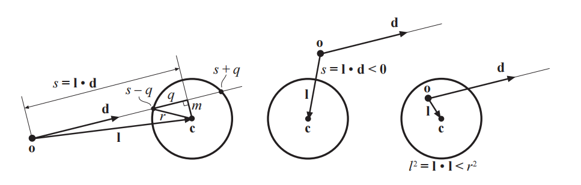
- 最终的伪代码
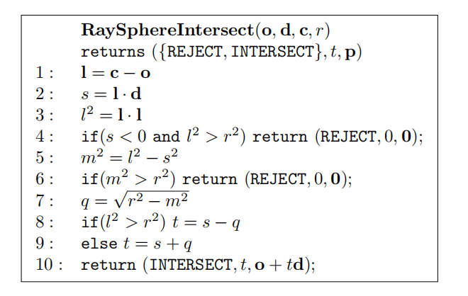
(2) 射线 Box 相交
-
射线和 AABB 相交可以用平板法，经过扩展后可以处理 OBB (Oriented Bounding Box)，可以返回距离最近的正 t 值（即从射线原点\mathbf{o}到交点的距离，如果存在的话）。
-
计算射线与属于 OBB 的所有平面的相交 t 值。OBB 会被认为是一个包含三个 slab 的集合，如下图左侧二维示意图。对于每个 slab，都有一个最小值和一个最大值，其中。 可以理解为射线进入某个 slab 时的 t，而 可以理解为射线离开某个 slab 时的 t。取所有 slab 的 tmin 里最大的和所有 tmax 里最小的，也就是说最后一个进入 slab 的地方视为进入 box 的地方，最先离开 slab 的地方视为离开 box 的地方。
如下图，左侧展示了由两个平板构成的二维 OBB，右侧展示了两条射线，这两条射线与 OBB 相交。所有相交的值都被显示了出来，其中与绿色 slab 的交点下标为，与橙色 slab 的交点下标为。值的极值使用方框进行标记。左边的射线击中了这个 OBB，因为自；而右边的射线则没有击中这个 OBB，因为。
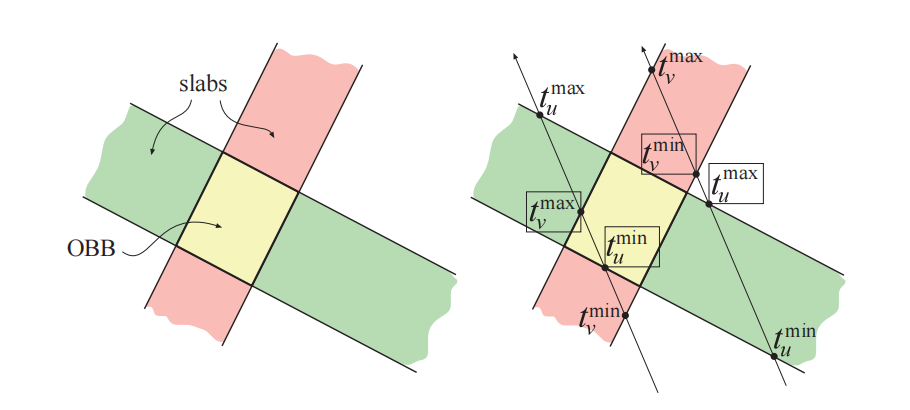
-
射线与 OBB 相交测试的伪代码。
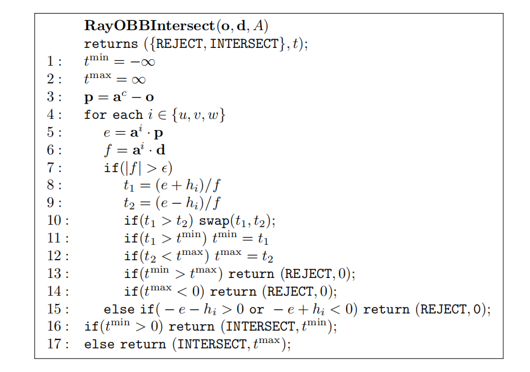- 对于 OBB A 而言，其中心点表示为 即代码中的；u、v 和 w 是这个 box 归一化的侧边方向；h_u、h_v 和 h_w 是正的半长距离（从中心到各个 box 面的距离）。
- 第 7 行检查了射线方向是否垂直于当前被测试 slab 的法线，即射线是否平行于 slab 平面。如果二者平行，则不可能相交。 在这里代表一个很小的数字，约为 ，这是为了避免在除法时发生数值溢出。
- 第 8 行和第 9 行中包含了对 f 的除法，实际上，可以先计算一次 1/f，然后再使用这个值来进行相乘，这样做通常会更快，因为除法运算的开销通常会很大。
- 第 10 行确保了和中的最小值会存储在中。
- 如果函数在第 13 行返回，则说明射线没有击中 box；类似地，如果在第 14 行返回，则说明 box 位于射线原点的后面。如果这条射线平行于待测 slab（因此无法与这个 slab 相交），则执行第 15 行，它会测试这条射线是否位于 slab 外面。如果射线位于 slab 外面，则代表射线不会击中 box，此时终止测试。
- 在第 15 行之后，还可以测试 ，其中 l 是当前射线的长度。这样可以将射线视为一段线段，如果新的交点要大于目前已知的最近交点，则拒绝这个交点。这个测试可以推迟到整个射线与 OBB 测试完成之后再进行，但是在循环内部尝试早期拒绝，通常会更加高效。
- 对于 OBB 的特殊情况（即 AABB），还有一些其他优化。例如：第 5 行和第 6 行可以更改为 e = p_i 和 f = d_i，这样可以使得测试速度更快。通常在第 8 行和第 9 行中可以使用 AABB 的最小角和最大角，这样可以避免一些加法和减法。
(3) 如何判断一个点在三角形(矩形、扇形)内
判断点是否在三角形内
-
重心坐标法 (Barycentric Coordinates)
- 任意一个在三角形平面上的点 P 都可以由下面这个显式方程表示：
其中，.
-
表示 点 P 相对于三个顶点的"权重"（和恒为一：）。
- 当 点 P 就是三角形的重心 (centroid)；
- 所有 ，则点在 三角形内部；
- 有一个为 0，则点在边上；
- 有两个为 0，则点在顶点上；
- 有负值，则点在三角形外部。
-
重心坐标求解：
想象经过平移，以 A 为原点，可以改写为
即：
其中，。这样就把原问题转换为了一个 求向量线性组合系数的问题：即 在以 和 为基底的局部坐标系中对应的坐标是多少？
通过 点积法 解线性系统，伪代码如下：1
2
3
4
5
6
7
8
9
10d00 = dot(v0, v0)
d01 = dot(v0, v1)
d11 = dot(v1, v1)
d20 = dot(v2, v0)
d21 = dot(v2, v1)
denom = d00 * d11 - d01 * d01
beta = (d11 * d20 - d01 * d21) / denom
gamma = (d00 * d21 - d01 * d20) / denom
alpha = 1 - beta - gamma
# Finally check if alpha, beta, and gamma are all in the range of [0, 1].
-
向量叉乘法
-
原理：
对每条边 AB,BC,CA (注意顺序)，判断点 P 是否在边的"内侧"。 -
方法：
-
a. 计算向量：
-
b. 计算边与点向量的 2D 叉乘（或 3D z 分量）
判断标准：
- 如果 都是正的或都是负的，则点在三角形内
- 否则在外或边界上
-
-
PS: 重心坐标法是 2D、3D 通用的，而向量叉乘法适用于适用于 2D 或 3D 共面三角形（虽然三角形的顶点在三维空间中，但这三个点都处于同一个平面上）。
(4) 射线三角形相交/如何判断一条光线是否与一个三角形相交
-
第一种：先判断光线是否和三角形所在的面相交，再判断这个交点是否在三角形内，判断点是否在三角形内；
-
第二种：Moller Trumbore 算法，简称 MT 算法。光线方程 = 重心坐标表示的三角形内部点。求解得到 t，判定 t 是否合理，t > 0，然后重心坐标都是非负的，就是有解，在三角形内。
任意一个三角形内的点都可以由下面这个显式方程给出：
其中是重心坐标，它必须满足，，。这里的重心坐标可以用于纹理映射，以及法线插值或者颜色插值等操作。也就是说，和代表了每个顶点对特定位置的贡献权重，是第三个权重。这些坐标在其他的一些资料中通常被表示为、和。
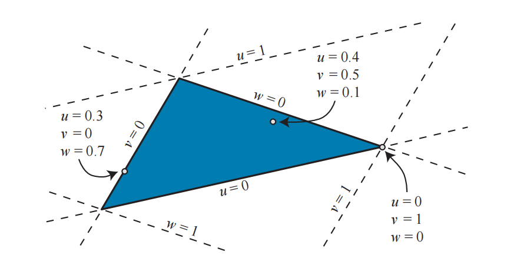
计算射线和三角形的交集，即，结果为：
整理可得：
这意味着重心坐标，以及从射线原点到交点的距离，可以通过求解这个线性方程组得到。
如果记上式中的矩阵为，那么上式与相乘即可获得。
具体求解见 RTR 4th Chapter 22.8
(5) 射线多边形相交
一个包含个顶点的多边形，由一个有序的顶点列表定义，当的时候，顶点与形成一条边；这个多边形最终被从到的边所封闭。这个多边形所在的平面可以表示为。其中，是平面的法向量， 平面上任一点， 则是一个常数。所有满足该条件的 ，都处于这个平面上。
首先计算射线和之间的交点，即用射线方程替换上式中的。这个方程的解如下：
如果判别式成立（是一个极小的数，可以取或者更小的值，其目的是避免在进行除法运算时发生数值溢出），则我们可以认为射线与多边形平行，不存在交点。这里忽略射线位于多边形平面内的情况。
如果通过了判别式（射线和平面有交点），就可以把上式中求得的 t 代入射线方程中计算射线与多边形平面的交点：
：
然后，判断交点是否位于多边形内部的问题，会由三维问题简化为一个二维问题。这是通过将多边形的所有顶点以及交点，投影到、或者的其中一个平面上来实现的，具体要投影在哪个平面上，需要 使得投影后的多边形面积最大。也就是说，可以忽略绝对值最大的坐标分量，并将其他分量保留为二维坐标。例如：给定一个法线，其中分量的绝对值最大，因此所有的坐标都会被忽略。这里选择最大的那个绝对值，是为了避免投影到一个可能产生退化三角形（零面积）的平面上。请注意，这个分量信息可以进行预先计算，并存储在多边形中以提高效率。在这个投影过程中，多边形和交点的拓扑结构是不变的。
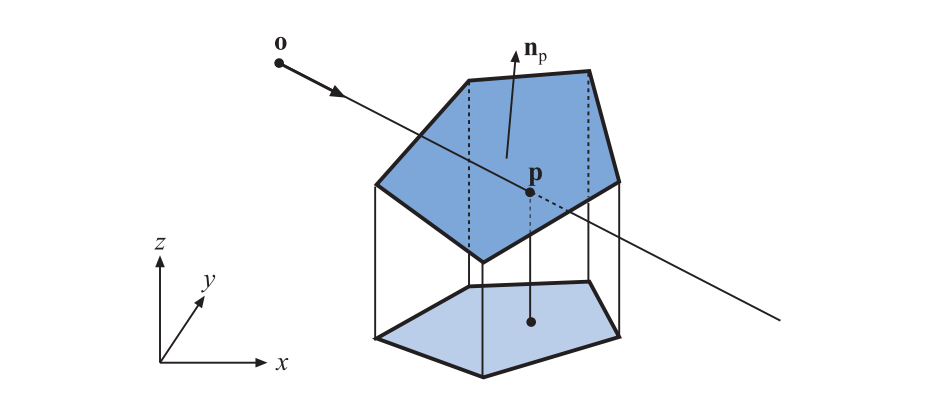
然后使用交叉点测试判断射线与平面的交点是否在二维多边形内。交叉点测试是说，如果从某个点出发，沿平面任意方向（通常向右）的射线会穿过奇数条的多边形边界，那么这个点位于多边形内部。
交叉点测试支持：
- 凸多边形
- 凹多边形
- 任意顺序的顶点列表（有序闭合）
不支持： - 自交多边形，即多边形的边与边之间发生了交叉，图形不是简单封闭的。
- 点恰好落在边上（需要特殊处理）
(6) 如何判断两个三角形是否相交
-
三维空间中的通用方法（3D）：分离轴定理（Separating Axis Theorem，SAT）
- 如果能找到一条轴，使得把两个图形"投影到这条轴上"之后，它们的投影范围是分开的，那么这两个图形在空间中就没有接触或重叠。这条轴称为分离轴。
- 如果两个凸多边形（如三角形）在所有可能的分离轴上投影都发生重叠，则它们相交；
- 如果存在一个轴，使得两个三角形在该轴上投影没有重叠，则它们不相交。
- 适用于 3D 中任意方向三角形
- 实际步骤：
- 列出所有可能的分离轴（三维中最多 11 个）：
三角形 A 的 3 个边的法线方向
三角形 B 的 3 个边的法线方向
所有 A 边 × B 边 的叉积方向（最多 9 个）（二维的话没有这一组） - 将两个三角形分别投影到每个轴上，比较投影区间是否重叠
- 存在不重叠的情况，则两个三角形不相交
- 所有都重叠，两个三角形相交
- 列出所有可能的分离轴（三维中最多 11 个）：
-
面片与面片相交（平面 + 边界）（比 SAT 更快）
- 判断两个三角形是否共面
- 若共面，转换为 2D 问题（见下一种方法）
- 若不共面，检查 A 的三个点是否在 B 的平面两侧
- 若不在两侧，则不可能相交
- 若在两侧，则求两个平面交线
- 计算交线与每个三角形的交点 并 检查交段是否重合（如果这两个三角形相交，那么它们在 L 上的交点也会重叠。否则，这两个三角形就没有交集）
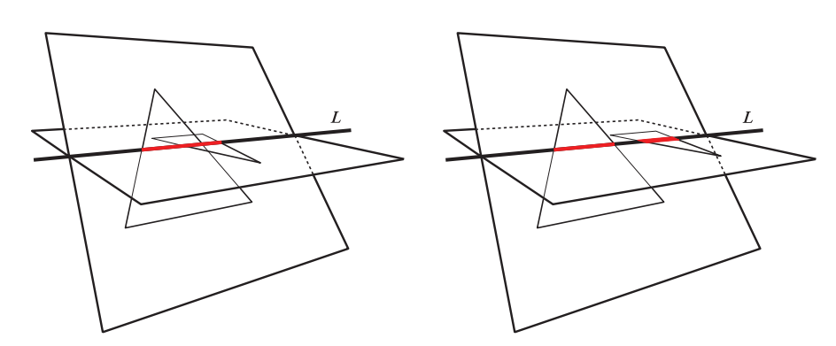
-
共面情况：转化为 2D 三角形相交判断 (边相交 或 点包含)
- 三角形边与边相交 + 点包含
- 逐边判断：三角形 A 的每条边是否和三角形 B 的任意边相交？
- 两线段是否相交？（2D 线段相交检测）
- 点包含：若没有边相交，则判断：
- A 的某一个点是否在 B 内 或 B 的某一个点是否在 A 内
- 用重心坐标法或交叉点法判断点在三角形内
(7) 线/线相交
-
二维线段
- 计算点在对方线段两端的方向关系
- 判断：C 在 AB 的哪侧、D 在 AB 的哪侧
- 判断：A 在 CD 的哪侧、B 在 CD 的哪侧
- 使用向量叉乘判断"是否异侧"：
1
2
3
4d1 = (B - A) × (C - A)
d2 = (B - A) × (D - A)
d3 = (D - C) × (A - C)
d4 = (D - C) × (B - C)- 如果 且 则两线段相交。
- 如果某些叉乘为 0，也即在线段上（共线或端点重合），则需要额外判断是否重叠
- 计算点在对方线段两端的方向关系
-
二维直线/三维直线
- 参数法把直线写作光线方程，令二者相等来求解
- 具体见 RTR 4th
(8) 多边形相交/如何判定两个不规则多边形发生碰撞
分离轴定理（Separating Axis Theorem，SAT）
- 如果能找到一条轴，使得把两个图形"投影到这条轴上"之后，它们的投影范围是分开的，那么这两个图形在空间中就没有接触或重叠。这条轴称为分离轴。
- 如果两个凸多边形（如三角形）在所有可能的分离轴上投影都发生重叠，则它们相交；
- 如果存在一个轴，使得两个三角形在该轴上投影没有重叠，则它们不相交。
16. view 矩阵 和 projection 矩阵的推导
view 矩阵推导见： view 矩阵推导
projection 矩阵推导见： 推导透视矩阵; 深入理解透视矩阵
无论是正交投影还是透视投影矩阵，都是通过裁剪操作移除那些不在视锥体内的部分，只保留可见的部分。两者都将视锥体（只不过正交投影假设视锥体是一个长方体，而透视投影假设视锥体是一个平头锥）映射到一个标准化的立方体 范围内。这种标准化确保了所有在视锥体内的点都被统一处理，便于后续的裁剪和光栅化。
17. 多线程下 opengl 的 share_context 的哪些类型可以正常读写（vbo fbo vao programe）
18. Drawcall Shader 的优化经验 （少用除法 改用乘法）
19. 欧拉角、矩阵、四元数表示旋转的区别和优缺点
参考：《游戏引擎架构》P164
（1）欧拉角：定义了绕着三个坐标轴的旋转角，来确定刚体的旋转位置的方式，包括俯仰角 pitch，偏航角 yaw 和滚动角 roll；它的优点是比较直观，而且单个维度上的角度也比较容易插值；缺点是它不能进行任意方向的插值，而且会导致万向节死锁的问题，旋转的次序对结果也有影响
（2）矩阵：优点是不受万向节死锁的影响，可以独一无二的表达任意旋转，并且可以通过矩阵乘法来对点或矢量进行旋转变换；现在多数 CPU 以及所有 GPU 都有内置的硬件加速点积和矩阵乘法；缺点是不太直观，而且需要比较大的存储空间，也不太容易进行插值计算。
（3）四元数：四元数的好处是能够串接旋转；能把旋转直接作用于点或者矢量；而且能够进行旋转插值；另外它所占用的存储空间也比矩阵小；四元数可以解决万向节死锁的问题。
20. 切线空间（法线、切线、副切线）
- 切线空间 (Tangent Space) 是指以每个表面点为中心建立的一个局部坐标系，通常由 三个正交单位向量 组成：
- 法线向量 (Normal, N)：指向垂直于表面的方向
- 切线向量 (Tangent, T)：沿着表面 UV 坐标的 U 方向
- 副切线 (Binormal/Bitangent, B)：沿着表面 UV 坐标的 V 方向
- 通常通过叉乘计算：
- 切线空间的 最大作用：
- 将纹理空间（UV 坐标系）中的法线信息，转换到世界空间或视图空间参与光照计算。
- 在 法线贴图 (Normal Mapping) 中，纹理中的法线是 Tangent Space 法线，渲染时必须 将其变换到世界空间或视图空间，与光源方向、视线方向进行正确的光照运算。
- Tangent Space 转换时通常会构造：，用于将 Tangent Space 法线 转换到 世界空间法线 公式：
- 优势：
- 可重用性与纹理空间绑定：切线空间法线贴图是与模型 UV 坐标绑定的，只需要一张法线贴图，就可以在不同位置、不同旋转、不同缩放下复用，与模型变换无关。如果你存储世界空间法线贴图：模型一旦旋转、移动，法线方向就不正确了，每次变换都要重新生成法线贴图，不现实。
- 节省存储：切线空间法线贴图的法线始终在 局部切线空间，可以紧凑存储为 RGB 纹理 (3 个分量)，即。z 分量通常可以通过 x、y 推导，存为 2 通道节省空间。而世界空间法线贴图需要额外存储变换信息，且无法复用，存储成本更高
- 适应动态变形模型：比如 骨骼动画、顶点动画、形变网格。切线空间法线贴图可以随着模型变形自动适应，因为法线贴图信息是 相对于表面 UV 坐标系 的，不需要重新生成法线贴图 - 经常见到的法线贴图之所以是蓝色的是因为法线贴图中任意一点的颜色通道的 b（rgb 的 b）值都大于 0.5。那种偏蓝色的法线纹理其实就是存储了在每个顶点各自的 Tangent Space 中，法线的扰动方向。
21. vulkan renderpass subpass 理解 透明物体放同一个 renderpass 还是不同
22. vulkan memorybarrir
23. vulkan 的 shader buffer 类型 如何区分频繁更新和偶尔更新
24. 什么是齐次坐标，齐次坐标有什么作用
- 统一表示仿射变换：在欧几里得空间，平移不能用矩阵乘法表示，必须用加法。而在齐次坐标空间，所有 平移、旋转、缩放、投影都可以用 4×4 矩阵乘法统一表达，大大简化了图形变换的计算和管线设计。
25. High Dynamic Range (HDR)
参考：https://learnopengl-cn.github.io/05 Advanced Lighting/06 HDR/
- HDR（高动态范围） 是一种图像表示技术，允许每个像素保存远超普通图像（LDR）亮度范围(一般来说，当存储在帧缓冲(Framebuffer)中时，亮度和颜色的值是默认被限制在 0.0 到 1.0 之间的)的信息(LDR 明亮区域容易过曝，暗部死黑)，常用于图形学中真实表现亮度、对比度、反射等效果(保留强光/暗影细节，真实光照)。
- 为什么需要 HDR？
- 因为现实世界的亮度范围差距巨大（阳光、室内灯光、阴影）
- HDR 渲染：允许用更大范围的颜色值渲染从而获取大范围的黑暗与明亮的场景细节，最后将所有 HDR 值转换成在[0.0, 1.0]范围的 LDR(Low Dynamic Range,低动态范围)（显示器只能显示在 0.0 到 1.0 范围之内的颜色）。转换 HDR 值到 LDR 值得过程叫做色调映射(Tone Mapping)，这些色调映射算法经常会包含一个选择性倾向黑暗或者明亮区域的参数。
- 使用浮点帧缓冲(Floating Point Framebuffer)作为颜色缓存，可以存储超过 0.0 到 1.0 范围的浮点值。OpenGL 中默认的帧缓冲默认一个颜色分量只占用 8 位(bits)，而浮点帧缓冲可以存储 16-bit / 32-bit 。
- 色调映射算法
- Reinhard 色调映射：分散整个 HDR 颜色值到 LDR 颜色值上，所有的值都有对应。Reinhard 色调映射算法平均地将所有亮度值分散到 LDR 上。这个算法是倾向明亮的区域的，暗的区域会不那么精细也不那么有区分度。
1
2// Reinhard色调映射
vec3 mapped = hdrColor / (hdrColor + vec3(1.0));- 曝光参数（Exposure）：如果有一个场景要展现日夜交替，我们当然会在白天使用低曝光，在夜间使用高曝光，就像人眼调节方式一样。
1
2// 简单的曝光色调映射
vec3 mapped = vec3(1.0) - exp(-hdrColor * exposure);
26. Image-Based Lighting (IBL) 原理
参考：
https://learnopengl-cn.github.io/07 PBR/03 IBL/01 Diffuse irradiance/
https://learnopengl-cn.github.io/07 PBR/03 IBL/02 Specular IBL/
-
使用 真实环境贴图（HDR 环境贴图）作为光照源，用于模拟来自场景四周的全局间接光照和真实反射环境。IBL 通常使用（取自现实世界或从 3D 场景生成的）环境立方体贴图 (Cubemap) ，我们可以将立方体贴图的每个像素视为光源。
-
IBL 本质是 间接光照技术，仍需额外添加 直接光源（如太阳）。
-
IBL 对 PBR 很有意义。将 IBL 引入 PBR 系统就要考虑如何计算渲染方程。如下所示 Cook-Torrance BRDF 反射率方程，给定任何方向向量 ，我们需要获取这个方向上场景的辐射度。可以将立方体贴图的每个纹素视为一个光源，使用一个方向向量 对此立方体贴图进行采样。
为了以更有效的方式解决积分，我们需要对其大部分结果进行预计算。这里可以看到 BRDF 的漫反射 和镜面 项是相互独立的，因此可以将积分分成两部分分开研究：
-
两个主要贡献：
-
环境漫反射（Diffuse IBL）：
- 模拟环境光照在表面发生散射（如粗糙表面）
- 通常通过 Irradiance Map（辐照度图） 实现：在每个采样方向 上存储其积分结果（每个纹素中存储了方向的卷积结果），可以理解为场景中所有能够击中面向 的表面的间接漫反射光的预计算总和。
- 低动态范围(Low Dynamic Range, LDR)储存环境贴图：直接使用各个面的图像的颜色值（0.0 和 1.0 之间）。这样虽然可能适合视觉输出，但作为物理输入参数没有用处。PBR 的大部分输入基于实际物理属性和测量，因此为入射光值找到其物理等效值是很重要的。
- HDR 文件格式（.hdr）:存储一张完整的立方体贴图，所有六个面数据都是浮点数，允许指定 0.0 到 1.0 范围之外的颜色值，以使光线具有正确的颜色强度。这个文件格式并非直接存储每个通道的 32 位数据，而是每个通道存储 8 位，再以 alpha 通道存放指数——虽然确实会导致精度损失，但是非常有效率。不同于立方体贴图，将环境信息存储到一张等距柱状投影图(Equirectangular Map) 中（从球体投影到平面上），使水平视角附近分辨率较高，而底部和顶部方向分辨率较低，在大多数情况下是不错的折衷方案，因为大部分有意义的光照和环境信息都在水平视角附近方向。对等距柱状投影采样比对立方体贴图采样效率低，可以先把等距柱状投影映射到一个立方体上。
- stb_image.h 支持将辐射度 HDR 图像直接加载为一个浮点数数组。
-
环境镜面反射（Specular IBL）
-
模拟表面对环境的镜面反射（如金属、高光）。
-
真实世界中，一个表面的反射光来自于：环境中多个方向的入射光、材质本身的 BRDF、观察方向。如果用直接采样的方法去做每个方向的积分会很慢（光照积分太复杂）。
-
分割求和近似(split sum approximation)将方程的镜面部分分割成两个独立的部分，单独求卷积，然后在 PBR 着色器中求和。即把镜面反射部分：
拆分成：
其中，卷积的第一部分被称为预滤波环境贴图。它类似于辐照度图，是预先计算的环境卷积贴图，但这次考虑了粗糙度。对这张环境贴图进行 多级模糊，模拟不同粗糙度下的反射效果。因为随着粗糙度的增加，参与环境贴图卷积的采样向量会更分散，导致反射更模糊，所以对于卷积的每个粗糙度级别，我们将按顺序把模糊后的结果存储在预滤波贴图的 mipmap 中，每一 mip level 表示一个粗糙度级别。使用 Cook-Torrance BRDF 的法线分布函数生成采样向量及其散射强度，该函数将法线和视角方向作为输入。由于在卷积环境贴图时事先不知道视角方向，因此 Epic Games 假设视角方向（即镜面反射方向）总是等于输出采样方向，以作进一步近似。
卷积的第二部分等于镜面反射积分的 BRDF 部分。如果我们假设每个方向的入射辐射度都是白色的（即 L(p,x)=1.0），就可以在给定粗糙度、光线 、法线 、夹角 的情况下，预计算 BRDF 的响应结果。Epic Games 将预计算好的 BRDF 对每个粗糙度和入射角的组合的响应结果存储在一张 2D 查找纹理(LUT)上。这张表以 BRDF 的输入（范围在 0.0 和 1.0 之间）作为横坐标，以粗糙度作为纵坐标，存储的是菲涅耳响应的系数（R 通道）和偏差值（G 通道）。
-
使用 预滤波环境贴图（Prefiltered EnvMap） 和 BRDF LUT (LookUpTable) 加速 （预计算 + 查表）
-
-
(1) IBL 的 specular 部分的卷积，做了什么假设？这样假设会出现什么问题？
在计算镜面反射卷积的第一部分时，使用 Cook-Torrance BRDF 的法线分布函数生成采样向量及其散射强度，该函数将法线和视角方向作为输入。由于在卷积环境贴图时事先不知道视角方向， 假设视角方向（即镜面反射方向）总是等于输出采样方向 。预过滤的环境卷积就不需要关心视角方向了。这意味着当从如下图的角度观察表面的镜面反射时，得到的掠角镜面反射效果(light strikes a surface at a very shallow angle and is reflected in a mirror-like fashion)不是很好。

(2) IBL 一般会把图像存储在 cubemap 中，如果在一些移动端设备上，没有提供 cubemap 的相关 api，这个时候该怎么处理？如果使用柱状投影图，会有什么问题？
-
a. 直接把各个角度的六张图合并成一张大图，自己定义采样方式。
-
b. 采用等距柱状投影图(Equirectangular Map). 如果使用柱状投影图，会使水平视角附近分辨率较高，而底部和顶部方向分辨率较低。在大多数情况下，这是一个不错的折衷方案，因为大部分有意义的光照和环境信息都在水平视角附近方向。
(3) 如果需要实时进行卷积操作，diffuse 部分怎么做可以更快，更高效？
-
方法 1：
“An Efficient Representation for Irradiance Environment Maps” By Ravi Ramamoorthi and Pat Hanrahan, SIGGRAPH 2001
环境光照可被投影到球谐基函数上，存储为 一组系数。将环境光照用 Spherical Harmonics（球谐函数）展开，只保留前 3 阶（9 个系数）。其中，：来自环境贴图的预计算球谐系数；：在法线方向 n 上的第 i 阶球谐基函数值；n 表面法线方向。
只需 9 个 dot product，就能估算半球积分；非常适合 GPU 实时渲染、低频环境光。但只能表达低频光照，不适合锐利阴影、强方向性光源。- 为什么能快速计算卷积？
- 因为球谐有个很棒的性质叫做：球面卷积在频域中等于系数乘积，也就是说：
预计算：将环境贴图投影成 SH 系数 ，运行时：用表面法线 n 计算 ，乘以对应系数即可
- 因为球谐有个很棒的性质叫做：球面卷积在频域中等于系数乘积，也就是说：
- 为什么能快速计算卷积？
-
方法 2：少量重要性采样（实时蒙特卡洛积分）
如果不能预卷积，可以每帧对环境贴图采样 16~64 个方向。对每个方向 :贡献 =
将这些方向平均作为漫反射估计值
-
方法 3：使用低 mip 级别模拟漫反射模糊
对 cube map 直接采样 mipmap 较低级别（高度模糊，比如 mip 4~5）
利用模糊模拟光照卷积（效果类似于 Irradiance）
(4) 反射探针
- 在 diffuse IBL 中计算积分时，辐射方程除了入射方向 以外实际上也依赖了位置 p，但在上述计算中是假设它位于辐照度图的中心，这样所有漫反射间接光只能来自同一个环境贴图，这样可能会破坏现实感（特别是在室内）。可以通过在场景中放置多个反射探针来解决此问题，每个反射探针单独预计算其周围环境的辐照度图。这样，位置 p 处的辐照度（以及辐射度）是取离其最近的反射探针之间的辐照度（辐射度）内插值。
- 多个光照探针如何插值：四面体插值。对于空间中一点 P，可以用四面体的四个顶点坐标的线性组合来表示，即, P=aP0+bP1+cP2+dP3 其中 a+b+c+d=1。
27. XPBD 原理
28. 透视除法的意义
根据存储深度的信息，构建近大远小的透视效果
29. UBO 和 SSBO
-
UBO：和普通的 uniform 变量相比，就像是一个结构体，可以容纳更多变量，存储在显存的常量区，速度较快，编译时大小是确定的，而且大小是有限制的，在着色器里可读但不可写，修饰符 uniform，一般用于少量的变量设置，在所有着色器都常用到。
-
SSBO：和 UBO 相比，SSBO 功能更强大，在着色器里是可读可写的，修饰符 buffer，存储在全局变量区，速度比 UBO 慢些，但是其大小可以在编译时不确定，而且大小基本没有限制，一般用于两个着色器之间处理后数据的传递，多见于计算着色器中。
-
UBO 与 SSBO 都可用于多个 shader program 之间共享 uniform 变量
-
UBO 是 GPU 上的一块常量存储区，最大设置为 64KB、128KB（与硬件有关）；SSBO 则应该是对应整个显存，无大小限制，最大设置为显存大小。
30. 隐式欧拉积分 显式欧拉积分
31. OpenGL 抖动阶段做了什么处理？
-
抖动（Dithering） 是指在将高精度颜色值输出为低精度（如 8-bit）时，通过引入微小的随机扰动或有序扰动，来减少量化引起的色带（banding）现象。在 片元着色器输出颜色、经过混合（Blending）、准备写入颜色缓冲时，OpenGL 会将 float 类型的颜色值转换为整数（如 float → 8-bit），在转换之前，根据当前启用的抖动方式，对颜色值加上细微扰动，这样在最终 8-bit 色彩空间中表现得更平滑，避免出现色带。
-
为什么需要抖动？
例如，有一个渐变从 0.0 到 1.0。如果用 8-bit 表示，只能表示 256 个值，这样在颜色变化缓慢的区域（例如天光、暗角、雾），就会出现明显色块（Color Banding）。而抖动能通过“模拟随机误差”的方式欺骗人眼，让过渡看起来更自然平滑。 -
glEnable(GL_DITHER) 默认启用；glDisable(GL_DITHER) 手动禁用
32. billboard 有什么作用？原理是什么？
- Billboard（广告牌）技术 是一种让二维图像（通常是一个四边形 Quad）始终面向摄像机的图形技术，看起来像三维物体，但实际上是贴在板子上的图。
- 典型应用：
- 3D 树叶、草地、远景山体
- 火焰、爆炸、烟雾、光斑（Bloom）
- 粒子系统（Particle System）
- UI 标签、单位血条、地图标注
- 核心思想：动态地计算 Quad 的朝向，使其始终面向摄像机。
- 具体做法：更新顶点位置或变换矩阵，让面片面向 View 方向（如：让 Quad 的法线始终朝向摄像机位置）。
33. 双重缓冲 和 垂直同步
- 当绘制 3D 图像时，GPU 会把结果渲染到帧缓冲（Framebuffer）中，而显示器会周期性地从帧缓冲读取图像来刷新屏幕。。
- 如果 GPU 弱显示器强，会导致显卡一帧还没画完显示器就读取并显示了，而双重缓冲是使用两个帧缓冲区（前缓冲区 + 后缓冲区）轮流渲染和显示，避免屏幕读取过程中被修改内容。
- GPU 在后缓冲区渲染下一帧的图像
- 显示器在前缓冲区读取当前帧的图像
完成渲染后，两个缓冲进行交换。
- 如果 GPU 强显示器弱，例如显示器以 60Hz、144Hz 的频率刷新，显示器刷新一次的时间够 GPU 渲染若干帧，导致一帧还没显示完又开始画下一帧，从而造成撕裂。垂直同步（V-Sync） 会强制 GPU 等显示器刷新完成后再交换缓冲。
34. 移动端、PC 端 GPU 显存架构
(1) 移动端架构和 PC 端架构
- 显存架构的不同
| 特性 | 移动端 GPU | PC / 桌面 GPU |
|---|---|---|
| 显存类型 | 与 CPU 共享主内存（统一内存） | 独立高速显存（GDDR / HBM） |
| 带宽 | 非常有限（< 100 GB/s） | 非常高（500 GB/s ~ 1 TB/s） |
| 显存访问延迟 | 相对低，但容量受限 | 带宽高但更依赖缓存结构优化 |
| 容量限制 | 通常小于 8GB（与系统共享） | 独立配置 8~24GB 或更大 |
| 功耗控制 | 极端敏感（电池续航约束） | 不敏感，主要靠散热/风扇解决 |
-
移动端采用统一内存架构（UMA: Unified Memory Architecture）
- 特点：
- GPU 和 CPU 共享一套物理内存（如 LPDDR5）
- 减少了显存复制开销
- 易于硬件集成（SoC）
- 问题：
- 内存带宽有限，故渲染/纹理要精打细算
- 缓存更重要，故需要 tile-based 渲染
- 特点：
-
GPU 架构设计的不同
特性 移动端 GPU PC GPU 渲染架构 Tile-based deferred rendering（TBDR） Immediate Rendering（立即渲染） 目标优化方向 节能 + 带宽压缩 + tile 缓存 性能极致 + 多并发 pipeline 计算能力（ALU 数量） 少量（适合低分辨率） 大量（高吞吐浮点并行） 纹理压缩/访问优化 极度依赖 ETC/ASTC 等压缩方案 带宽高+缓存层级多，压缩可选 合批能力 强调 batching，避免 state switch 资源充足，状态切换代价小 -
为什么移动端采用这种解决方案？
- 节能
- 移动内存带宽有限，因此需要 tile cache + 减少 draw call
- CPU + GPU + RAM 一体封装
- 面向中低分辨率
- 目标内容简单，不需要复杂后处理和高精度计算
-
总结对比
维度 移动端 GPU PC / 桌面 GPU 显存架构 统一内存（CPU + GPU 共用） 独立显存（GDDR / HBM） 渲染架构 Tile-based 渲染（TBDR） Immediate 渲染 带宽 低（高效压缩 + 缓存） 高（大吞吐配合缓存） 能耗 超低功耗（数瓦） 高性能 + 高功耗（百瓦级） 优化方向 合批、压缩、剔除、Tile 缓存 多线程、多流水线并行、宽带宽策略 -
移动端 GPU 为了节能与带宽受限环境而生，采用统一内存 + tile-based 渲染架构；而 PC GPU 则拥有独立显存与超高带宽。两者设计目标不同，因此架构和使用策略差异显著。
(2) TBR 和 TBDR
-
TBR（Tiled-Based Rendering）：将屏幕划分为小块（Tile），然后逐 Tile 进行渲染。
- 流程：
- 屏幕划分为 Tile 区域（例如 16x16、32x32 像素块）
- 将所有三角形投影到屏幕，判断每个三角形影响哪些 Tile（binning）
- 逐 Tile 渲染：
- 载入 Tile 的相关几何数据、光照、纹理；
- 在片上缓存中执行几何和像素着色，片上缓存（On-chip Cache）是集成在 GPU 芯片内部的一块高速缓存，在渲染过程中临时存储数据（如像素颜色、深度、法线等），以避免频繁访问外部内存（RAM）；
- 整个 Tile 渲染完后，把结果一次性写入主内存的帧缓冲区。整个 Tile 渲染过程不需要反复访问外部显存（外部访问耗电高延迟大）
- 优点：
- 显著减少内存带宽：Tile 渲染通常在片上缓存中完成
- 减少过绘：可在 Tile 内提前剔除遮挡三角形（早 Z）
- 更适合移动端：内存资源紧张，带宽节省极大
- 流程：
-
TBDR：在 TBR 基础上引入了 延迟渲染（Deferred Rendering），进一步提升多光源支持和节省内存。
(3) 在 TBDR 上怎么处理半透明物体？
分 Pass / 混合渲染
- 所有不透明物体：用 TBDR 渲染（走 G-buffer + 光照）
- 所有半透明物体：用传统前向渲染（Forward Pass）后处理叠加
35. 帧同步和状态同步
(1) 帧同步和状态同步
“所谓同步，就是要多个客户端表现效果是一致的，例如我们玩王者荣耀的时候，需要十个玩家的屏幕显示的英雄位置完全相同、技能释放角度、释放时间完全相同，这个就是同步。而对于大多数游戏，不仅客户端的表现要一致，而且需要客户端和服务端的数据是一致的。所以，同步是一个网络游戏概念，只有网络游戏才需要同步，而单机游戏是不需要同步的。”
- 帧同步（Frame Sync）和状态同步（State Sync）是多玩家游戏中常见的两种网络同步模型，用于保证客户端之间的一致性。
- 帧同步：“在帧同步中，服务器或主机仅同步 玩家输入或操作指令（如移动、攻击键等），然后由各客户端使用完全一致的逻辑和初始状态，帧帧执行来还原游戏过程。”
- 特点：
- 逻辑计算在客户端；
- 网络传输数据小（只传操作）；
- 所有客户端必须保证逻辑完全一致；
- 易于防外挂（判断逻辑不变）；
- 不适合大型复杂游戏（同步成本高）。
- 适用场景：
- RTS（如《星际争霸》）；
- MOBA（如《王者荣耀》使用帧同步+服务仲裁）；
- 小游戏；
- 动作对战类手游（节省流量 + 响应快）。
- 特点：
- 状态同步：“在状态同步中，服务器会同步游戏对象的完整状态信息（如坐标、血量、动画状态等），客户端根据服务器下发的状态来更新显示。”
- 特点：
- 服务器负责游戏逻辑计算；
- 网络传输开销大（大量对象状态）
- 客户端主要用于渲染和表现（非权威）；
- 延迟较高时容易出现瞬移、补帧、插值；
- 易于防作弊（服务器控制所有状态）。
- 适用场景：
- MMO（如《魔兽世界》）
- 大型多人射击（如《绝地求生》）
- FPS;
- 大型开放世界；
- 高延迟环境（因客户端无法决定状态）
- 特点：
| 对比项 | 帧同步 | 状态同步 |
|---|---|---|
| 同步内容 | 玩家操作指令（输入） | 游戏对象的完整状态 |
| 计算发生地 | 客户端 | 服务器 |
| 带宽使用 | 低 | 高 |
| 一致性要求 | 极高，需逻辑一致 | 相对低，由服务器统一控制 |
| 延迟感知 | 低 | 高 |
| 防作弊能力 | 强（无法伪造状态） | 强（状态不可伪造） |
| 使用场景 | MOBA、RTS、小游戏 | MMO、FPS、大型开放世界 |
(2) 常见游戏类别
-
RTS（Real-Time Strategy，实时战略游戏）
- 定义：玩家同时控制多个单位/建筑，进行资源采集、生产、作战等操作，游戏是实时进行的（非回合制）。
- 代表游戏：
- 《星际争霸 StarCraft》
- 《帝国时代 Age of Empires》
- 《红色警戒 Red Alert》
- 特点：
- 控制多个单位
- 资源经营 + 战斗并重
- 大量逻辑同步（AI、战斗状态等）
- 通常采用 帧同步（操作同步）
-
MOBA（Multiplayer Online Battle Arena，多人在线战术竞技）
- 定义：玩家控制一个角色，与队友组队对抗另一队玩家，目标是推塔、团战、夺胜点等。
- 代表游戏：
- 《英雄联盟 LOL》
- 《Dota 2》
- 《王者荣耀》
- 特点：
- 每位玩家只控制一个英雄
- 强竞技性、高节奏、低延迟要求
- 技能、普攻、移动精度高
- 多采用 帧同步（+ 服务器仲裁）
-
MMO（Massively Multiplayer Online，大型多人在线游戏）
- 定义：支持上百上千名玩家同时在线，拥有持久世界、角色成长、社交、战斗、任务系统等内容。
- 代表游戏：
- 《魔兽世界 World of Warcraft》
- 《剑网 3》
- 《梦幻西游》
- 特点：
- 大地图、开放世界
- 非常多实体对象（玩家、NPC、怪物）
- 网络压力大
- 多使用 状态同步（服务器权威控制一切）
-
FPS（First-Person Shooter，第一人称射击）
- 定义：玩家从“自己视角”出发，使用武器进行射击，强调精准瞄准、反应速度和低延迟体验。
- 代表游戏：
- 《CS:GO》
- 《使命召唤 Call of Duty》
- 《Apex 英雄》
- 特点：
- 视角 = 玩家眼睛
- 对延迟、预测、补偿要求极高
- 技术上采用 状态同步 + 客户端预测 + 延迟补偿
对比总结表：
| 类型 | 控制方式 | 同步模型 | 典型特征 | 网络重点 |
|---|---|---|---|---|
| RTS | 控制多个单位 | 帧同步 | 多单位、资源、战术 | 客户端需完全一致计算 |
| MOBA | 控制一个英雄 | 帧同步 + 仲裁 | 技能释放、团战节奏快 | 快速响应、低延迟 |
| MMO | 大量玩家 | 状态同步 | 大地图、成长系统 | 大量状态、服务器压力大 |
| FPS | 第一人称角色 | 状态同步 +预测 | 精准瞄准、延迟敏感 | 延迟补偿、预测与回滚 |
(3) 客户端预测
- 客户端预测是指，客户端在尚未收到服务器确认之前，自己先对操作进行预执行（预测），以减少延迟感，提高响应速度。通俗讲：玩家一按键，游戏立刻表现出效果（比如角色动了）（不等服务器返回才开始动），同时把指令发给服务器，等服务器确认回来，再决定是否修正。这样能使玩家感觉操作是即时的，但同时通过服务仲裁仍然保持了数据一致性。但无法预测其他玩家的状态/操作，例如如果是被打，就只能等待服务器同步。
- 为什么需要客户端预测？
- 因为网络是有延迟的（几十 ~ 上百 ms）：
- 如果每次都“等服务器响应再显示结果” ，会感觉角色延迟、顿挫、卡顿，尤其在快节奏对战游戏中（MOBA、FPS）
(4) 服务仲裁
- 服务仲裁（Server Arbitration） 是指：服务器对客户端上报的操作或状态进行验证、决定是否接受或修正的机制，用于防止作弊和保持游戏状态一致。
(5) 帧同步如何处理延迟
帧同步的流程大致如下：
-
玩家客户端产生操作指令（如移动、攻击）
-
将操作发送给服务器或主机
-
等待所有玩家操作汇总后统一执行当前帧
-
每一帧都必须 “等待所有人”，才能同步执行
-
这就意味着：某个玩家网络稍卡，所有人都要等他！
常用策略
-
固定帧延迟（帧延迟缓存）
- 客户端并不立即使用“当前帧”的指令，而是延迟 N 帧后再执行。
- 例如设置延迟为 2 帧：
- 第 0 帧收到输入 → 第 2 帧再执行
- 所有客户端都这样处理 → 保证帧对齐 + 同步一致
- 优点：
- 容忍轻微网络抖动（ping 波动）
- 保证逻辑一致性
- 缺点：
- 操作延迟 = N 帧时间（60fps 下约 33~66ms）
-
输入预测（Input Prediction）（客户端体验优化）
- 客户端在等待远端同步帧时，提前预测自己的操作结果进行渲染，后续如果预测错误再纠正。
- 常见于：
- 自己移动 / 放技能等可预测性高的行为
- 显著减少输入延迟感
- 风险：
- 预测失败会“跳一下” ，故需配合补帧插值等手段平滑修复
-
帧同步 + 服务端仲裁（Hybrid Model）
- 类似《王者荣耀》的方式，客户端用帧同步跑逻辑，但服务器负责最终仲裁操作是否合法、是否命中、是否越界。
- 好处：
- 保持帧同步流畅性
- 增强安全性（防外挂）
- 某些状态可由服务器即时修正，避免外挂干扰同步状态
-
帧补发 / 快速追帧（Catch-up）*
- 对于网络延迟高/卡帧玩家，允许客户端 快速补帧 来赶上当前同步帧：
- 连发多帧操作包
- 快进模拟逻辑，跳过渲染帧赶进度
- 不能无限追，否则太卡就被踢掉
-
王者荣耀帧同步处理延迟的策略
- 客户端帧延迟设置为 2 ～ 4 帧
- 同步操作 + 预测输入显示
- 实时帧率补偿（断帧重连）
- 服务器仲裁技能/命中判断
- 延迟高于阈值玩家会被托管或提示断开
| 技术手段 | 作用 |
|---|---|
| 帧延迟缓存 | 抵抗抖动，保证帧对齐 |
| 输入预测 | 降低操作延迟感，提升手感 |
| 服务端仲裁 | 保证公平性、防止作弊 |
| 补帧/追帧机制 | 处理短时网络波动，保证同步 |
36. z-fighting 是什么/怎么处理？ 动近平面和远平面哪一个比较好？
(1) 深度缓冲定义、原因、解决方法
- 定义：Z-Fighting（Z 轴冲突 / 深度冲突） 是指在图形渲染中，由于两个表面/像素之间的深度值过于接近，导致 GPU 无法准确判断哪个在前，最终出现像素闪烁、锯齿、乱跳等“闪动”现象。
- 主要原因：
- 两个面或两个像素的 Z 值几乎相同，超出 GPU 深度缓冲精度（Z-buffer resolution）
- 深度缓冲精度不够（尤其是 16-bit z-buffer）
- 远近裁剪范围设置不合理，导致精度集中在远处，近处精度不足（常见）（深度缓冲并非线性分布，精度在 Near Plane 附近更高）
- 解决方法：
- 直接修改模型顶点数据或位置：添加一点用户无法注意到的偏移量
- 贴图浮雕、道路白线、UI 面板等都可以做“偏移贴近”
- polygon offset（OpenGL/DirectX）：由 GPU 在光栅化阶段修改深度值的渲染偏移机制（仅影响深度写入，不动模型位置）
- 例如在 OpenGL 中
1
2glEnable(GL_POLYGON_OFFSET_FILL);
glPolygonOffset(factor, units); // 例如 glPolygonOffset(1.0f, 1.0f) - 常用于阴影贴图、地表投影、Decal 渲染
- 例如在 OpenGL 中
- 改善深度缓冲精度
- 使用 24-bit 或 32-bit float Z-buffer
- 使用 反向 Z-buffer（Reverse Z）(把近平面映射到 Z=1，远平面映射到 Z=0)
- 在远近平面距离很大的场景尤其有效
- 调整摄像机的 Near/Far 平面比值
- 避免 Near 太小、Far 太大
- 传统 Z-buffer 的深度精度是非线性的，分布在 Near 附近。
- 建议：Near ≈ 0.1，Far ≈ 100（比值尽量控制在 < 1000）
- 多个 pass 分开渲染
- 直接修改模型顶点数据或位置：添加一点用户无法注意到的偏移量
(2) 为什么深度缓存是非线性的
核心原因：透视投影矩阵的深度映射是非线性的。
在透视投影中，我们会将场景中的一个点 （摄像机空间的 z 值）映射到标准化设备坐标（NDC）的 z 值 ，最终再转成深度值。
这个映射关系是：
其中 a、b 是由 Near 和 Far 决定的常数。这也就是说，深度缓冲区中的值并不是线性分布的（），它在 近平面 附近变化非常剧烈，在 远平面 变化非常平缓。
37. A*寻路
引入启发式函数，优化了 Dijkstra 算法 。
每个节点 n 的总评估代价：
f(n)=g(n)+h(n)
其中，
f(n)：当前节点的综合优先级
g(n)：从起点到当前节点的已知路径成本
h(n)：启发式估计：从当前节点到终点的预估成本
38. 手写 blinn-phong shader
顶点着色器
1 | |
片元着色器
1 | |
39. 手写旋转，平移，缩放矩阵
(1) 平移
(2) 缩放
(3) 旋转
绕 x 轴旋转：
绕 y 轴旋转：
绕 z 轴旋转：
绕 Z 轴旋转，就是 XY 平面内的旋转，像旋转一个二维平面上的向量一样。
40. GPU Driven Rendering
- 概念：GPU Driven Rendering 是一种渲染架构，其中渲染管线的关键调度逻辑（如实例剔除、批次生成、Draw Call 构建）由 GPU 而不是 CPU 来完成。 使用 GPU Driven 后，CPU 只需上传一次数据，后续全部由 GPU 自主驱动完成。
- 流程：
- 场景数据全部上传 GPU
- Mesh、Transform、材质、LOD、剔除信息、包围盒
- 存入 SSBO / StructuredBuffer / Texture Buffer
- Compute Shader 执行剔除 + 可见性检测
- 视锥剔除（Frustum Culling）
- LOD 判断（根据距离或屏幕大小）
- Occlusion Culling（GPU 压栈）
- 生成 Indirect DrawCommand
- 使用 glDrawIndirect() 或 vkCmdDrawIndirect() 等方式
- 动态生成渲染命令，不走 CPU
- 真正渲染
- GPU 直接使用 Indirect Buffer 来执行渲染
- 场景数据全部上传 GPU
- 优势：
- GPU 内部做并行剔除+渲染，减少 CPU-GPU 通信 少量 Command buffer + 低同步成本
- 更适合大型场景/海量实例 数百万实例也能流畅运行
- 动态内容更新效率更高 可结合 HZB、Instance Buffer 动态调整
- 实现哪些功能？
- 实例剔除：GPU 判断哪些实例在视野内，哪些可以跳过
- LOD 自动切换：按照屏幕尺寸或距离，GPU 自主选择 LOD
- 遮挡剔除：使用 HZB 或 Z-buffer 进行可见性测试
- 批次生成（Draw Call 生成）：GPU 组装 Indirect Draw Buffer，供后续绘制
- 动态物体驱动：如粒子、草地、动画、布料等由 Compute 更新
- 海量实例绘制（百万级）：用 GPU Instancing/Cluster 渲染大规模对象
- 可见性反馈 / 更新：支持反馈机制（如物体加载、streaming）
41. 大世界场景需要注意哪些问题/城市场景有什么优化思路？
LOD（根据摄像机距离或屏幕空间大小动态选择不同精度模型，远的对象用低模，近的对象用高模）, 场景空间划分，CSM，剔除，纹理过多导致的带宽或者显存问题…
42. GPU 实例化和静态批处理
(1) GPU 实例化和静态批处理有什么区别，各自有什么优劣？
GPU 实例化（Instancing） 和 静态批处理（Static Batching） 都是用于减少绘制调用（Draw Call）以提升 GPU 渲染性能的技术，但它们适用的对象、原理和优劣点有很大差异。
-
GPU 实例化（Instancing）：允许使用 一个 Draw Call 来渲染多个几何结构相同但变换、颜色、贴图等不同的对象。例如，绘制 1000 棵相同模型的树。又如草地、人群、粒子系统等，这些对象需要在每一帧中进行更新和渲染。
它依赖 GPU 特性，如：
-
glDrawElementsInstanced（OpenGL） -
DrawMeshInstanced（Unity） -
ID3D11DeviceContext::DrawInstanced（DirectX） -
优点：
- 大幅减少 Draw Call 数量，适合大量重复物体
- 保留每个实例的独立变换、颜色等差异（通过 Instance Buffer）
- 动态物体可用
-
缺点：
- 模型必须相同（或结构非常相似）
- 不是所有平台/硬件都高效支持大量实例
- 每个实例仍有一定 GPU 成本（比如 instance ID 处理）
-
-
静态批处理（Static Batching）：多个静态（不动）物体在加载阶段或运行时被合并为一个大网格，作为一个整体发送到 GPU，从而通过减少顶点提交次数来优化性能。比如，10 个不动的建筑合并成一个大模型再绘制。
-
优点：
- 非常适合静态场景（建筑、地形、道具等）
- 内存消耗较低（合并后只需存一个网格）
- 在不支持 Instancing 的平台上也适用
-
缺点：
- 对象不能移动（Transform 变换代价大）
- 不能单独剔除（整体剔除或整体绘制）
- 合并过程会占用 CPU 和内存资源
-
-
对比总结
| 特性 | GPU 实例化 | 静态批处理 |
|---|---|---|
| 对象是否可动 | 可以 | 不可以（静态） |
| 是否共享网格数据 | 是 | 否（合并为新网格） |
| 是否共享材质 | 是 | 是（需相同材质） |
| 是否节省 Draw Call | 是 | 是 |
| 内存消耗 | 较小（只要 instance buffer） | 较大（合并生成新网格） |
| 剔除粒度 | 可逐实例剔除（支持 GPU 剔除） | 整体剔除 |
| 适用场景 | 大量重复物体、可动物体 | 静态场景、地图装饰 |
(2) 如何生成成千上万相同的对象？
- 通过实例化技术（Instancing / GPU Instance）实现大规模重复物体（如森林、士兵、粒子等）高效渲染
- 实例化（Instancing） 是一种 GPU 渲染优化技术，它允许使用同一个几何体模型，一次性高效绘制多个副本（实例），每个实例可以拥有不同的位置、缩放、颜色等属性。
- 例如在 OpenGL 中（其他图形 API 中也有），在不使用实例化的情况下，如果想画 1000 棵树，要调用 1000 次
glDrawArrays或glDrawElements，每次都要传模型数据和变换矩阵。使用实例化后只调用一次：glDraw*Instanced(...)，把所需的数据向 GPU 只上传一次，并对每个实例用不同变换矩阵。这样减少 CPU 到 GPU 通信开销。1
2
3glDrawArraysInstanced(...);
glDrawElementsInstanced(...);
glVertexAttribDivisor(attributeIndex, 1); // 每实例变化一次
43. 纹理贴图的压缩算法
按平台支持/压缩方式/图像质量来分类。
(1) DXTC / S3TC（DirectX Texture Compression）
- Windows 和主机平台最广泛使用的压缩格式。
代表算法：
| 名称 | 通道支持 | 压缩率 | 简介 |
|---|---|---|---|
| DXT1 | RGB (无 alpha) | 1:6（8 bpp → 4 bpp） | 最常用，透明只支持 binary（1bit） |
| DXT3 | RGBA (显式 alpha) | 1:4（8 bpp → 8 bpp） | 保留 alpha 通道精度，适合遮罩 |
| DXT5 | RGBA (渐变 alpha) | 1:4 | 用 alpha 插值更平滑 |
- OpenGL 里对应叫 GL_COMPRESSED_RGBA_S3TC_DXT1_EXT 等
(2) ETC / ETC2（Ericsson Texture Compression）
- 用于 OpenGL ES / Android / 移动平台
| 名称 | 支持 | 简介 |
|---|---|---|
| ETC1 | RGB | 只支持 RGB，无 alpha，压缩率约 1:6 |
| ETC2 | RGBA | 增强版，支持 alpha、sRGB、1/2 通道 |
- 安卓移动设备默认支持 ETC1/ETC2，适合贴图压缩。
(3) ASTC（Adaptive Scalable Texture Compression）
- 现代设备推荐，支持最多特性
| 特性 | 说明 |
|---|---|
| 可变分辨率块大小 | 4x4 ~ 12x12 任意块，质量 vs 空间可自由权衡 |
| 支持高通道、HDR | RGBA、RGBE、HDR、sRGB 均可 |
| 高压缩比 + 高质量 | 比 DXT/ETC 更清晰，占用更小 |
| OpenGL 支持版本 | OpenGL ES 3.2+, Vulkan, Apple GPU |
- 被认为是“最先进的纹理压缩算法之一”
44. 骨骼动画的实现
45. OpenGL
(1) glfw 是什么
用于创建 OpenGL / OpenGL ES / Vulkan 窗口、创建并管理 OpenGL 上下文和处理输入（键盘、鼠标、手柄等），支持多平台（Windows, macOS, Linux）。
(2) 上下文是什么
是一块记录所有 OpenGL 状态、资源、渲染命令的“执行环境”，包含着你创建的所有纹理、着色器、缓冲对象、状态机等信息。必须有一个激活的上下文，OpenGL 才能正常运行。
(3) opengl 与 openglES 区别
OpenGL ES 是 OpenGL 的简化版本，专为移动设备和嵌入式系统设计，特性精简但高效，是 Android 和 WebGL 的图形基础。
46. 超分算法
(1) 超分算法
- 概念：通过插值、卷积或深度学习等方法重建出高分辨率图像的细节和边缘。
- 方法：
- 传统插值方法：双线性、双立方插值等，效果有限
- CNN 深度学习方法：如 SRCNN、ESPCN、EDSR，学会补全细节
- 实时图形超分：例如 FSR、DLSS，用于实时渲染图像增强
(2) 实时图形超分算法（Real-time Super Resolution）
这些算法能用低分辨率渲染图像 + 补充数据重建高分辨率输出，核心目标是“低成本获得高画质”。
-
FSR（FidelityFX Super Resolution）
版本 原理 特点与适用场景 FSR 1.0 空域超分（Spatial SR） 快速、轻量、无依赖，但边缘模糊 FSR 2.0+ 时域重建（Temporal SR） 结合历史帧、深度、运动矢量，质量高 FSR 3 支持帧生成（类似 DLSS3） 添加帧插值，提升流畅度 - 特点：
- 开源
- 不依赖 AI 模型或特定硬件
- 跨平台：PC / Console / Steam Deck
- 特点：
-
DLSS（NVIDIA Deep Learning Super Sampling）
版本 特性 DLSS 1.0 早期 AI 超分，效果一般 DLSS 2.0 TSR + AI 反锯齿，高质量 DLSS 3.0 加入帧插值（Frame Generation） - 特点：
- 使用 NVIDIA 专用 Tensor Core 和 AI 模型
- 非开源，需 RTX GPU 支持
- 图像锐度、边缘清晰度好于 FSR
- 特点：
-
XeSS（Intel Xe Super Sampling）
- 类似 DLSS，用 AI 重建图像
- 同时支持：
- AI 加速模式（Intel GPU）
- 通用模式（无 AI，用 SIMD 实现）
- 效果介于 DLSS 和 FSR2 之间
- 适用于 ARC GPU / PC 平台
-
TAAU（TAA + Upsample）
- Temporal Anti-Aliasing + Upscaling，由 Epic Games 提出（用于 UE4/5）
- 特点：
- 基于传统 TAA + 运动矢量 + 抖动采样
- 效果接近 FSR2.0，但更轻量
- 开源免费，广泛应用于虚幻引擎项目
-
CAS + EASU（Contrast Adaptive Sharpening）
- FSR 1.0 的两个组件：
- EASU（Edge Adaptive Spatial Upsample）：边缘感知放大算法
- CAS（Contrast Adaptive Sharpening）：锐化图像、增强细节
- 非常适合移动端 / 轻量渲染 / UI 放大等场景。
- FSR 1.0 的两个组件：
-
画质提升基本原理
-
输入内容：
- 当前帧低分图像（color）
- 历史帧图像
- 深度图（depth）
- 运动矢量（motion vectors）
-
重建步骤：
- 对历史像素进行重投影
- 利用当前帧+历史帧混合补全细节
- 检测抖动/鬼影并做反锯齿
- 高质量 Upscale 到目标分辨率
最后加锐化（可选）
-
47. vulkan 的同步机制
48. Vulkan 中的 Fence、Semaphore，Barrier 有什么区别？
49. UE 的 RDG
50. ECS（Entity-Component-System）的原理和实现
-
ECS 是一种将游戏对象数据与逻辑分离的架构，核心是：Entity 是纯 ID，Component 是纯数据，System 是纯逻辑，极大地提高了模块化、性能和并发性。
-
为什么 ECS？
-
传统 OOP 模式中，类继承层次深、耦合高、不宜拓展。例如，有个物体既能移动又能发光。
1
2
3
4class Enemy : public GameObject {
int health;
void update();
}; -
ECS 则通过组合取代继承：
- Entity：一个 ID，不携带任何数据，用于唯一标识一个游戏对象
- Component：纯数据结构（无逻辑），用于组织附加在实体上的数据（如 Transform、Velocity）。每个组件代表一个功能单元。例如：
1
2struct Transform { vec3 pos; };
struct Velocity { vec3 vel; }; - System：对拥有特定组件的实体集合执行逻辑处理。例如：物理系统处理具有 Transform + Velocity 的实体。
1
2
3
4
5void PhysicsSystem(World& world) {
for (auto [e, trans, vel] : world.view<Transform, Velocity>()) {
trans.pos += vel.vel \* deltaTime;
}
}
-
-
ECS 的实现机制
- 内存结构上：稀疏存储 + SoA（结构体数组） - 所有 Component
存储在连续数组中，提高缓存命中率 - 每类组件独立存储（方便批处理） - Entity -> Component 映射
- 使用稀疏数组或哈希表管理 Entity-Component 映射关系
- System 会查询“拥有某些组件”的实体列表
- 使用 bitmask 或 archetype 进行加速
- 内存结构上：稀疏存储 + SoA（结构体数组） - 所有 Component
51. 主流图形 API 的特性和优劣
| 特性 | OpenGL | DirectX11 | Vulkan | DirectX12 | Metal |
|---|---|---|---|---|---|
| 编程模型 | 高级（状态机） | 高级（状态机） | 低级（命令驱动） | 低级（命令驱动） | 类 Vulkan（封装） |
| 多线程性能支持 | 差 | 差 | 极好 | 极好 | 好 |
| 跨平台性 | 最好 | 仅 Windows | 优秀 | 仅 Windows | 仅 Apple |
| 显存控制 / 显式资源管理 | 自动 | 自动 | 完全显式 | 完全显式 | 显式 |
| 编译时验证 / 管线状态封装 | 动态绑定 | 动态绑定 | PSO 编译前验证 | PSO 系统 | 类似 PSO |